<!doctype html>
<html lang="en">
<head>
  <meta charset="utf-8">
  <meta name="viewport" content="width=device-width, initial-scale=1">
  <title>arxiv digest — 2026-10-22</title>
  <style>
:root {
  --bg: #ffffff;
  --fg: #1f2328;
  --muted: #59636e;
  --border: #d0d7de;
  --card: #f6f8fa;
  --link: #0969da;
}
body {
  max-width: 980px;
  margin: 0 auto;
  padding: 2rem 1rem 5rem;
  font-family: -apple-system, BlinkMacSystemFont, "Segoe UI", Helvetica, Arial, sans-serif;
  line-height: 1.55;
  color: var(--fg);
  background: var(--bg);
}
a { color: var(--link); }
img { max-width: 100%; height: auto; }
pre, code { background: var(--card); border-radius: 6px; }
pre { padding: 1rem; overflow-x: auto; }
blockquote { border-left: 4px solid var(--border); padding-left: 1rem; color: var(--muted); }
details { margin: 0.6rem 0; }
summary { cursor: pointer; font-weight: 600; }
.paper-figures-scroll {
  display: flex;
  gap: 1rem;
  overflow-x: auto;
  overscroll-behavior-x: contain;
  padding: 0.75rem 0.25rem 1rem;
  margin: 1rem 0 1.25rem;
  border-top: 1px solid var(--border);
  border-bottom: 1px solid var(--border);
  scroll-snap-type: x proximity;
}
.paper-figure-card {
  flex: 0 0 min(260px, 72vw);
  scroll-snap-align: start;
  background: var(--card);
  border: 1px solid var(--border);
  border-radius: 12px;
  padding: 0.55rem;
}
.paper-figure-card img {
  display: block;
  width: 100%;
  max-height: 240px;
  object-fit: contain;
  background: white;
  border-radius: 8px;
}
.paper-figure-caption {
  display: block;
  margin-top: 0.5rem;
  color: var(--muted);
  font-size: 0.85rem;
}
.figure-strip-hint {
  color: var(--muted);
  font-size: 0.9rem;
  margin-bottom: -0.3rem;
}
</style>
  <script>
    window.MathJax = {
      tex: {
        inlineMath: [['$', '$'], ['\\(', '\\)']],
        displayMath: [['$$', '$$'], ['\\[', '\\]']],
        processEscapes: true,
        processEnvironments: true
      },
      options: {
        skipHtmlTags: ['script', 'noscript', 'style', 'textarea', 'pre', 'code'],
        ignoreHtmlClass: 'tex2jax_ignore',
        processHtmlClass: 'tex2jax_process'
      }
    };
  </script>
  <script id="MathJax-script" async
    src="https://cdn.jsdelivr.net/npm/mathjax@3/es5/tex-chtml.js"></script>
</head>
<body>
<header style="background-color: #333; color: white; padding: 15px; margin-bottom: 20px;">
  <h1 style="margin: 0; font-size: 24px;">
    <a href="https://ochelpan.github.io/arXiv_clean/" style="color: white; text-decoration: none;">Main</a>
  </h1>
</header>

<h1>Daily arXiv Report</h1>

<hr>
<p>
<a href="index.html">← Index</a>
 · <a href="papers_03.html">← Previous</a> · <a href="papers_05.html">Next →</a>
</p>
<hr>

<h2>Papers 61–80</h2>
<p><a id="paper-2610.27335"></a></p>
<h3 id="shot-allocation-strategies-in-debugging-quantum-circuits"><a href="http://arxiv.org/abs/2610.27335v1">Shot Allocation Strategies in Debugging Quantum Circuits</a></h3>
<p><strong>Authors:</strong> Era Thaqi, Coco Gong, Margaret Martonosi<br>
<strong>Type:</strong> theory · <strong>Category:</strong> quantum information and computing · <strong>PDF:</strong> <a href="https://arxiv.org/pdf/2610.27335v1">https://arxiv.org/pdf/2610.27335v1</a><br>
<strong>Analysis basis:</strong> full PDF text, analyzed in chunks
<strong>Topic relevance:</strong> <code>quantum measurements</code> <strong>3/5</strong></p>
<div class="figure-strip-hint">↔ Scroll figures horizontally</div>
<div class="paper-figures-scroll">
<figure class="paper-figure-card">
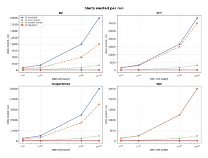
<figcaption class="paper-figure-caption"><b>Fig 1.</b> Fig. 1. Results across four benchmarks</figcaption>
</figure>
<figure class="paper-figure-card">

<figcaption class="paper-figure-caption"><b>Fig 2.</b> Figure 1 summarizes our results for four benchmarks. Full code and experimental data are available in our GitHub repository: Shot optimization [4]. Shot utilization and wasted shots: We define wasted shots as shots allocated to assertions beyond the point at which the assertion becomes statistically decisive. Across all benchmarks, S0 wastes the most shots, with waste increasing sharply as the total budget grows. S1 reduces waste by assigning a smaller fixed fraction of the budget to classical assertions, but still behaves similarly to S0. In contrast, S2 and S3 substantially improve shot efficiency by reallocating</figcaption>
</figure>
</div>

<p><strong>Summary.</strong> This paper addresses the inefficiency of current quantum circuit debugging by proposing advanced shot allocation strategies. It evaluates methods like adaptive entropy routing and sequential retirement, showing they intelligently reallocate limited measurement shots to the most ambiguous parts of the circuit. This significantly boosts debugging confidence while conserving computational resources.</p>
<p><strong>Why it may be interesting.</strong> While focused on debugging, the concept of dynamically allocating resources based on local uncertainty (entropy) has parallels in adaptive measurement schemes used in characterizing open quantum systems or optimizing quantum control sequences.</p>
<details>
<summary>Detailed structure</summary>
<p><strong>Main problem.</strong> The core problem is developing efficient and rigorous debugging and verification methods for quantum programs, specifically optimizing how limited computational resources (shot counts) are allocated across multiple mid-circuit assertions.</p>
<p><strong>Main result.</strong> Adaptive shot allocation strategies significantly improve debugging efficiency by concentrating shots on the most uncertain assertions, leading to comparable or better bug detection power with substantially reduced total shot usage.</p>
<p><strong>Method.</strong> The authors propose and evaluate four distinct shot allocation strategies—including adaptive entropy routing and sequential retirement—within the QDB quantum debugger framework.</p>
<p><strong>Model / system.</strong> The work focuses on debugging quantum circuits executed on a quantum computing platform, utilizing the QDB debugger implemented in the CUDA-Q framework. Debugging relies on statistical assertion-based testing.</p>
<p><strong>Key observables.</strong> Shot budget, wasted-shot counts, false positive rates, bug-detection power, and Shannon entropy scores for various assertion types.</p>
<p><strong>Important parameters / regimes.</strong> Total available shot count (B), and the noise model (noise-free vs. depolarizing noise).</p>
<p><strong>Assumptions / limitations.</strong> Existing debugging workflows incorrectly treat the shot count as a fixed input, ignoring the potential for optimal dynamic reallocation.</p>
<p><strong>Figures summary.</strong> Figure 1 summarizes the performance comparison of the four allocation strategies across multiple quantum circuit benchmarks.</p>
<p><strong>Paper structure.</strong> The paper introduces the challenge of shot allocation, details the four proposed strategies ($S_0$ through $S_3$), provides the mathematical basis for entropy scoring, and concludes with evaluations on various circuits under different noise conditions.</p>
</details>
<details>
<summary>Abstract</summary>
<p>Debugging quantum programs remains challenging due to the nature of quantum measurement. As quantum algorithms and systems scale, it is increasingly crucial to develop rigorous debugging and verification approaches. Statistical assertion-based debugging validates quantum program behavior through repeated circuit execution and statistical hypothesis testing, but existing frameworks treat shot count as a fixed input parameter, leaving the problem of optimal shot allocation across multiple mid-circuit assertions unexplored. To improve debugging efficiency by making better use of given shot counts, this paper proposes and evaluates four shot allocation strategies within the QDB quantum debugger implemented within the CUDA-Q framework. These allocation approaches: equal split, static weight allocation, adaptive entropy routing, and sequential retirement, use statistical approaches to test whether qubits have expected state characteristics at different points in execution. We evaluate these allocation strategies on different circuits, under both noise-free and depolarizing noise conditions. We show how adaptive strategies use shots efficiently by concentrating them on assertions with high uncertainty. This substantially reduces total shot usage while maintaining comparable debugging confidence.</p>
</details>
<p><sub><a href="#top">↑ back to top</a></sub></p>

<p><a id="paper-2610.27938"></a></p>
<h3 id="thermodynamic-stability-of-classical-math472math-lattice-gauge-models"><a href="http://arxiv.org/abs/2610.27938v1">Thermodynamic Stability of Classical $\mathbb Z_2$ Lattice Gauge Models</a></h3>
<p><strong>Authors:</strong> Shunsuke Sengoku, Weiguang Cao, Haruki Watanabe<br>
<strong>Type:</strong> theory · <strong>Category:</strong> statistical mechanics · <strong>PDF:</strong> <a href="https://arxiv.org/pdf/2610.27938v1">https://arxiv.org/pdf/2610.27938v1</a><br>
<strong>Analysis basis:</strong> full PDF text, analyzed in chunks
<strong>Topic relevance:</strong> <code>analog quantum simulation</code> <strong>3/5</strong></p>
<div class="figure-strip-hint">↔ Scroll figures horizontally</div>
<div class="paper-figures-scroll">
<figure class="paper-figure-card">
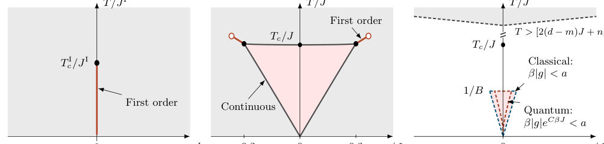
<figcaption class="paper-figure-caption"><b>Fig 1.</b> FIG. 2. Schematic diagrams. (a) Ising model. (b) 3D plaquette model (d = 3, m = 1) with a uniform link field. In (a),(b), gray shading marks trivial regimes. Red shading in (b) marks the deconfined regime. Solid red (dark gray) lines denote first-order (continuous) transitions; off-axis filled dots (open circles) denote multicritical points (critical endpoints). (c) Low- (red) and high-temperature (gray) analytic domains of Theorems 1 and 2, restricted to T &gt; 0. Dashed curves mark sufficient bounds, not phase boundaries. White regions are unclassified.</figcaption>
</figure>
</div>

<p><strong>Summary.</strong> This work rigorously proves the thermodynamic stability of classical $\mathbb Z_2$ lattice gauge models by demonstrating the joint analyticity of the free-energy density in temperature and perturbation strength. The key finding is that such stability can be established for dimensions $1 \le m \le d-2$ without relying on spontaneous symmetry breaking. This advances the understanding of thermal phase transitions in lattice gauge theories.</p>
<p><strong>Why it may be interesting.</strong> The rigorous mathematical proof of thermal stability in lattice gauge theories, especially in the absence of symmetry protection, provides deep insights into the nature of quantum phase transitions relevant to condensed matter physics.</p>
<details>
<summary>Detailed structure</summary>
<p><strong>Main problem.</strong> The research aims to establish the thermodynamic stability of classical $\mathbb Z_2$ lattice gauge models, particularly proving the existence of stable nontrivial thermal phases that are not protected by spontaneous symmetry breaking.</p>
<p><strong>Main result.</strong> The authors prove joint analyticity of the thermodynamic free-energy density in temperature and perturbation strength for $1 \le m \le d-2$, establishing stability without symmetry protection.</p>
<p><strong>Method.</strong> The analysis employs techniques involving joint analyticity proofs, high-temperature expansions, and gauge averaging to control the free energy density in the thermodynamic limit.</p>
<p><strong>Model / system.</strong> The system is a classical $\mathbb Z_2$ lattice gauge model defined on spins occupying $m$-dimensional cells in a $d$-dimensional lattice. The Hamiltonian involves products of Pauli operators on the boundaries of higher-dimensional cells.</p>
<p><strong>Key observables.</strong> Thermodynamic free-energy density ($f$ or $\psi$), and the joint analyticity of this free energy with respect to temperature ($T$ or $\beta$) and perturbation strength ($g$ or $\lambda$).</p>
<p><strong>Important parameters / regimes.</strong> The dimensions $d$ and $m$, temperature $T$ (or $\beta$), and the perturbation strength $g$. The results are specifically proven for the range $1 \le m \le d-2$.</p>
<p><strong>Assumptions / limitations.</strong> The proofs rely on bounding component shapes and placement counts, and the initial results do not cover the entire unperturbed low-temperature phase or prove a singularity separates the low- and high-temperature analytic regions.</p>
<p><strong>Figures summary.</strong> Figure 1 schematically shows the family of spin models based on $m$-cells (vertex, link, plaquette, cube). Figure 2 illustrates phase diagrams for the Ising model and the 3D plaquette model, showing different transition types and analytic domains.</p>
<p><strong>Paper structure.</strong> The paper develops the analysis by first defining the model and the problem of stability. It then uses advanced techniques like cluster expansions and complex analysis to prove joint analyticity of the free energy density in both low- and high-temperature regimes, culminating in the establishment of thermodynamic stability.</p>
</details>
<details>
<summary>Abstract</summary>
<p>Finite-temperature phases are traditionally studied through spontaneous symmetry breaking, but symmetry-breaking fields can remove their distinction, as in the Ising model. This motivates the search for stable nontrivial thermal phases without symmetry protection. For classical $\mathbb Z_2$ lattice gauge models with spins on $m$-dimensional cells in a fixed spatial dimension $d$, we prove joint analyticity of the thermodynamic free-energy density in temperature and perturbation strength at sufficiently low positive temperatures under sufficiently weak local perturbations, whenever $1\le m\le d-2$. Perturbations need not preserve internal or gauge symmetries and may include noncommuting quantum interactions. A separate high-temperature expansion yields an analytic region reaching infinite temperature at any fixed finite perturbation strength. These results establish thermodynamic stability and support the conjecture that low- and high-temperature regimes remain separated by a thermal transition without symmetry protection.</p>
</details>
<p><sub><a href="#top">↑ back to top</a></sub></p>

<p><a id="paper-2610.28462"></a></p>
<h3 id="tuning-between-collective-dynamics-and-scrambling-through-initial-state-symmetry-alignment-in-long-range-spin-models"><a href="http://arxiv.org/abs/2610.28462v1">Tuning between collective dynamics and scrambling through initial-state symmetry alignment in long-range spin models</a></h3>
<p><strong>Authors:</strong> Sridevi Kuriyattil, Johannes Kombe, Andrew J. Daley, Pablo M. Poggi<br>
<strong>Type:</strong> theory · <strong>Category:</strong> other · <strong>PDF:</strong> <a href="https://arxiv.org/pdf/2610.28462v1">https://arxiv.org/pdf/2610.28462v1</a><br>
<strong>Analysis basis:</strong> full PDF text, analyzed in chunks
<strong>Topic relevance:</strong> <code>analog quantum simulation</code> <strong>3/5</strong></p>
<div class="figure-strip-hint">↔ Scroll figures horizontally</div>
<div class="paper-figures-scroll">
<figure class="paper-figure-card">
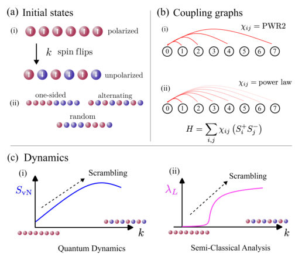
<figcaption class="paper-figure-caption"><b>Fig 1.</b> FIG. 1. (a) Initial states obtained by flipping spins from a fully polarized configuration. Unflipped and flipped spins are shown as red and blue spheres, respectively. We consider three flipping protocols: one-sided, alternating, and random. (b) The initial states are evolved under the XY Hamiltonian, for two different one-dimensional coupling graphs with adja- cency matrix χ. In graph (i) spins separated by distances that are powers of two are connected; in graph (ii), the interaction strength decays with distance as ∣i −j∣α. (c) Quantum and semiclassical dynamics are characterized by the long-time bi- partite von Neumann entanglement entropy (i) and the Lya- punov exponent (ii),...</figcaption>
</figure>
<figure class="paper-figure-card">
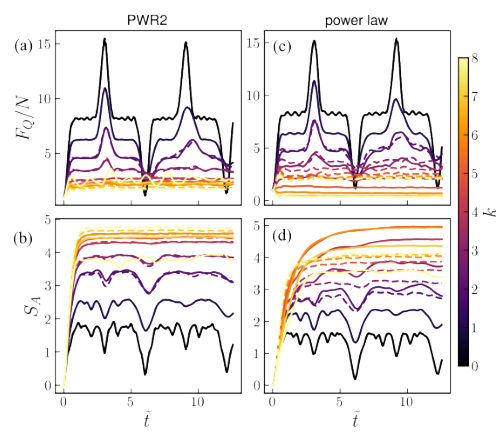
<figcaption class="paper-figure-caption"><b>Fig 2.</b> FIG. 2. Evolution of the quantum Fisher information density FQ/N under the XY Hamiltonian given in Eq. (1) for (a) PWR2 periodic graph and (c) power law decaying graph with α = 1.0 for N = 16 and different numbers of spin flips k. The time is normalized according to Eq. (3). Panels (b) and (d) show the bipartite entanglement entropy SA as a function of the normalized time for the corresponding graphs with ∣A∣= N/2. The spins are initialized in an x-polarised state, and spin flips are performed in the x basis. Solid and dashed lines correspond to alternating and one-sided spin-flip initial states, respectively. Any difference between the two curves is smaller than the line thickness. The...</figcaption>
</figure>
<figure class="paper-figure-card">
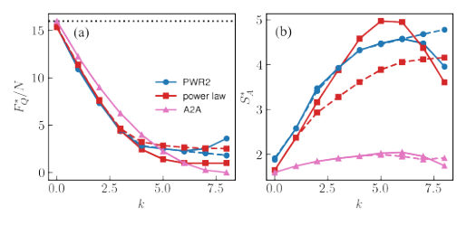
<figcaption class="paper-figure-caption"><b>Fig 3.</b> FIG. 3. (a) Maximum quantum Fisher information per spin F ∗ Q/N extracted from the peak values in Fig. 2(a) for the PWR2 graph and Fig. 2(c) for the power-law decaying graph, shown as a function of the number of spin flips. The pink line indicates the corresponding scaling for the all-to-all (A2A) graph, and the horizontal black dotted line is a guide to the eye, showing the maximum value of FQ</figcaption>
</figure>
<figure class="paper-figure-card">
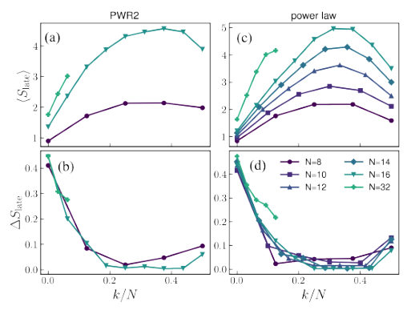
<figcaption class="paper-figure-caption"><b>Fig 4.</b> FIG. 4. Average late time entanglement entropy ⟨Slate⟩under the dynamics of the XY Hamiltonian in Eq. (1), where late times are defined as ˜t &gt; 10, plotted as a function of the frac- tion of flipped spins k/N (with k the number of spins flipped in the x-basis). Panels (a) and (b) correspond to the PWR2 periodic graph, and panels (c) and (d) to the PL coupling graph with with α = 1.0. Panels (a) and (c) show ⟨Slate⟩, while panels (b) and (d) show the corresponding standard deviation of the late-time entanglement entropy Eq. (8) char- acterising temporal fluctuations. We consider N = 8, 16, 32 for PWR2 periodic graph and N = 8, 10, 12, 14, 16, 32 for PL graph. For N = 32 the number of data...</figcaption>
</figure>
<figure class="paper-figure-card">
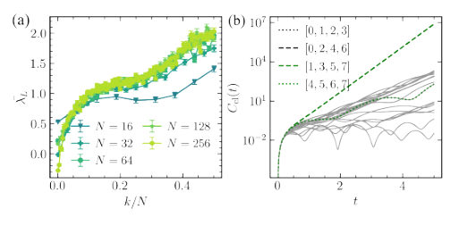
<figcaption class="paper-figure-caption"><b>Fig 5.</b> FIG. 6. (a) Averaged Lyapunov exponent ¯λL as a function of the fraction of flipped spins k/N for different system sizes N. The error bars reflect the statistical uncertainty across spin-flip configurations, while the overall values of ¯λL remains small. (b) To understand this, we plot all 70 trajectories for N = 8 with k = N/2 = 4 flipped spins. The alternating spin configuration (dashed black and green curves) exhibits the largest growth in classical sensitivity Ccl, defined in Eq. (10). The other trajectories are shown as grey lines. This behaviour persists for larger system sizes.</figcaption>
</figure>
</div>

<p><strong>Summary.</strong> This work explores how tuning the initial symmetry of a long-range spin model can switch its dynamics between predictable collective behavior and rapid quantum scrambling. By analyzing entanglement and chaos indicators, the authors show that the initial state dictates the dynamics, offering a unified framework for controlling quantum information spreading in experimentally accessible systems.</p>
<p><strong>Why it may be interesting.</strong> The explicit connection between initial state symmetry and the resulting quantum dynamics (collective vs. scrambling) provides a powerful, tunable control mechanism highly relevant for experimental quantum simulation platforms like neutral atoms in cavities.</p>
<details>
<summary>Detailed structure</summary>
<p><strong>Main problem.</strong> The paper investigates the transition between two distinct quantum dynamical regimes—collective dynamics and fast scrambling—within a single, deterministic, long-range spin model.</p>
<p><strong>Main result.</strong> The crossover between these two regimes is controlled not by the Hamiltonian itself, but by the initial state's degree of symmetry breaking, which can be tuned by local perturbations.</p>
<p><strong>Method.</strong> The dynamics are analyzed using entanglement measures (bipartite/multipartite entropy) and semiclassical diagnostics, specifically Lyapunov exponents extracted from Out-of-Time-Ordered Correlators (OTOCs).</p>
<p><strong>Model / system.</strong> The system is a one-dimensional XY spin model with long-range couplings, studied on specific graphs like the Powers-of-two (PWR2) graph or power-law decaying graphs. The dynamics are controlled by perturbing a fully symmetric initial state.</p>
<p><strong>Key observables.</strong> Bipartite and multipartite entanglement entropy ($S_A$), Quantum Fisher Information (QFI), and the Lyapunov exponent ($\lambda_L$).</p>
<p><strong>Important parameters / regimes.</strong> The fraction of flipped spins ($k/N$) controls the crossover, and the graph structure (PWR2 vs. power-law) dictates the specific dynamics.</p>
<p><strong>Assumptions / limitations.</strong> The semiclassical analysis is performed in the large spin limit ($S 	o \infty$), and the analysis focuses on 1D chains.</p>
<p><strong>Figures summary.</strong> Figures illustrate the evolution of entanglement entropy and QFI density as a function of the number of flips ($k$), showing clear changes in scaling and saturation indicative of the crossover. Other figures plot the semi-classical OTOC to extract the Lyapunov exponent.</p>
<p><strong>Paper structure.</strong> The paper establishes the model and the two regimes, then systematically varies the initial state symmetry (by changing $k$) while monitoring quantum measures (EE, QFI) and semiclassical chaos indicators ($\lambda_L$) to map out the crossover.</p>
</details>
<details>
<summary>Abstract</summary>
<p>Long-range interactions in many-body quantum systems give rise to a wide range of dynamical phenomena, from collective dynamics well described by integrable mean-field models with symmetric all-to-all couplings, to fast scrambling of quantum information from disordered long-range interactions. Here, we investigate scenarios in which both regimes emerge within a single deterministic, translation-invariant XY spin model with long-range couplings. We consider a sparse powers-of-two (PWR2) graph, where each spin interacts with a logarithmic number of neighbors, and a power-law-decaying model. By altering the initial state via local perturbations on a completely symmetric state, we show that the dynamics changes from collective to scrambling as witnessed by bipartite and multipartite entanglement measures. We characterize this collective-to-scrambling crossover using Lyapunov exponents in the semiclassical regime, and show that the spectral properties of the coupling graph adjacency matrix provide a very efficient tool to predict the onset of fast scrambling. Our results offer a unified framework for controlling the switch between collective and scrambling dynamics in a setup accessible in experiments with neutral atoms in cavities or in tweezer arrays.</p>
</details>
<p><sub><a href="#top">↑ back to top</a></sub></p>

<p><a id="paper-2610.27065"></a></p>
<h3 id="polynomial-time-classical-simulation-of-bosonsampling-under-any-constant-fraction-photon-loss"><a href="http://arxiv.org/abs/2610.27065v1">Polynomial-Time Classical Simulation of BosonSampling under Any Constant-Fraction Photon Loss</a></h3>
<p><strong>Authors:</strong> Byeongseon Go, Hyunseok Jeong<br>
<strong>Type:</strong> theory · <strong>Category:</strong> quantum information and computing · <strong>PDF:</strong> <a href="https://arxiv.org/pdf/2610.27065v1">https://arxiv.org/pdf/2610.27065v1</a><br>
<strong>Analysis basis:</strong> full PDF text, analyzed in chunks
<strong>Topic relevance:</strong> <code>analog quantum simulation</code> <strong>2/5</strong> · <code>Full counting statistics</code> <strong>1/5</strong> · <code>Keldysh / 2PI / non-Gaussian methods</code> <strong>1/5</strong> · <code>interference shaping light</code> <strong>1/5</strong> · <code>methods for driven-dissipative</code> <strong>1/5</strong></p>
<div class="figure-strip-hint">↔ Scroll figures horizontally</div>
<div class="paper-figures-scroll">
<figure class="paper-figure-card">
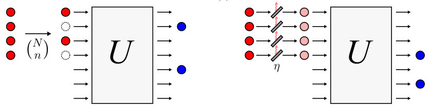
<figcaption class="paper-figure-caption"><b>Fig 1.</b> FIG. 1. Illustration of two representative photon-loss models for BosonSampling. (a) Fixed-loss model, shown for N = 4 input photons and n = 2 surviving photons. In this model, exactly n out of the N input photons survive, with the surviving subset chosen uniformly at random. The resulting output distribution is therefore the uniform average over the N n  BosonSampling output distributions corresponding to all possible n-photon input subsets of the N input modes. Our main simulation algorithm in Theorem 1 is developed for this setting. (b) Uniform-transmission-loss model, shown for N = 4 input photons. Here each of the N input photons is transmitted independently with probability η, so...</figcaption>
</figure>
<figure class="paper-figure-card">
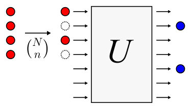
<figcaption class="paper-figure-caption"><b>Fig 2.</b> Fig. 1(b), another standard model of photon loss, for which the resulting simulation again runs in time poly(M, N, ε−1, δ−1) for any fixed transmission probability η ∈(0, 1). These results therefore demonstrate that efficient classical simulation can persist even in the linear- survival regime. They substantially extend the known regime of provable polynomial-time classical simulability beyond n = O( √</figcaption>
</figure>
<figure class="paper-figure-card">
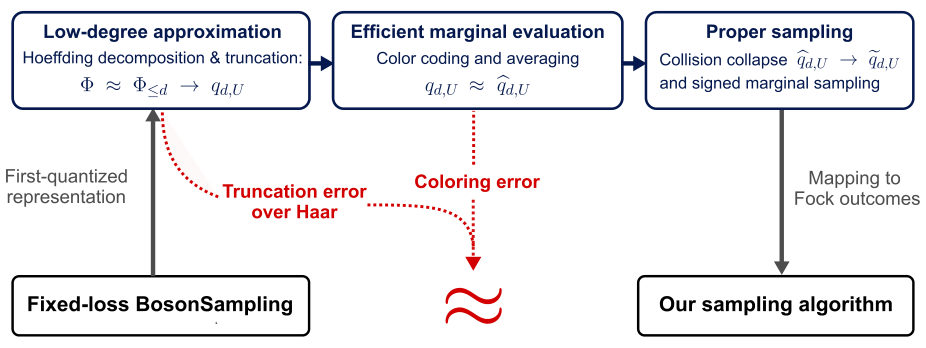
<figcaption class="paper-figure-caption"><b>Fig 3.</b> FIG. 2. Schematic overview of the proof of Theorem 2. Along the solid path, Hoeffding decomposition and truncation of Φ yield the signed approximation qd,U. Averaging independent color-coded functions then gives bqd,U with Ecol[bqd,U] = qd,U. For a fixed collection of colorings, the prefix marginals of bqd,U can be evaluated exactly and efficiently. Collision collapse yields the normalized signed function eqd,U, to which we apply the signed marginal sampling lemma of Ref. [51]. Mapping the resulting ordered strings to Fock outcomes gives the output distribution Ad(U), which includes the color-coding randomness. The red dotted paths show how the Haar truncation bound and the additional coloring...</figcaption>
</figure>
<figure class="paper-figure-card">
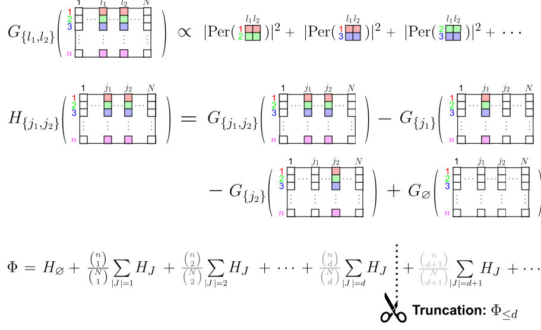
<figcaption class="paper-figure-caption"><b>Fig 4.</b> FIG. 3. Schematic illustration of GL, HJ, the Hoeffding decomposition of Φ, and its degree-d truncation. (a) For L = {l1, l2}, GL(B) is obtained, up to the prefactor (n −|L|)!, by summing the squared permanents of the submatrices BI,L over all row subsets I ⊆[n] with |I| = |L|. (b) For J = {j1, j2}, the component HJ(B) is obtained from {GL : L ⊆J} by M¨obius transform, H{j1,j2} = G{j1,j2} −G{j1} −G{j2} + G∅. (c) Grouping the Hoeffding decomposition of Φ by the order j = |J| yields blocks weighted by n j  / N j  . For n &lt; N, these coefficients decrease with j, as indicated schematically by the fading prefactors, which motivates the truncation Φ≤d obtained by keeping the terms with |J| ≤d and...</figcaption>
</figure>
</div>

<p><strong>Summary.</strong> This paper provides a theoretical breakthrough by demonstrating that BosonSampling remains classically simulable in polynomial time even when significant photon loss occurs, provided the surviving photon fraction is constant. It analyzes both fixed-loss and transmission-loss scenarios, significantly expanding the boundary of quantum advantage against classical simulation.</p>
<p><strong>Why it may be interesting.</strong> This work directly addresses the feasibility of photonic quantum computation in realistic, lossy experimental settings, which is a major bottleneck for quantum optics and quantum information science.</p>
<details>
<summary>Detailed structure</summary>
<p><strong>Main problem.</strong> Assessing the robustness of quantum advantage demonstrated by BosonSampling when subjected to photon loss.</p>
<p><strong>Main result.</strong> The authors show that BosonSampling can be classically simulated in polynomial time even when a constant fraction of input photons are lost, extending the known simulable regime significantly.</p>
<p><strong>Method.</strong> The work develops polynomial-time classical simulation algorithms by analyzing the fixed-loss and uniform-transmission-loss models using techniques involving low-degree approximation and marginal evaluation.</p>
<p><strong>Model / system.</strong> The system is BosonSampling, a process involving $N$ input photons passing through an $M$-mode random interferometer. The analysis considers two loss models: fixed-loss (random loss of $N-n$ photons) and uniform-transmission-loss (independent transmission probability $\eta$).</p>
<p><strong>Key observables.</strong> The simulation targets the fixed-loss and uniform-transmission-loss Fock-output distributions, analyzed via collision-collapsed and full Fock-output representations.</p>
<p><strong>Important parameters / regimes.</strong> The key parameters are the input photon number ($N$), the number of modes ($M$), the surviving fraction ($n/N$), and the approximation error ($\epsilon$) and failure probability ($\delta$).</p>
<p><strong>Assumptions / limitations.</strong> The main results are established under the dilute-mode condition ($M = \Omega(n^2 N)$) and rely on extending the fixed-loss analysis to the uniform-transmission-loss model by conditioning on the sampled photon number.</p>
<p><strong>Figures summary.</strong> Figure 1 illustrates the fixed-loss model (a) and the uniform-transmission-loss model (b) for the physical setup.</p>
<p><strong>Paper structure.</strong> The paper systematically defines the output representations (Fock-output, collision-collapsed, first-quantized) before presenting the advanced simulation techniques. It then derives error bounds using coloring arguments and concludes with the main theorems establishing polynomial-time simulation for constant surviving fractions.</p>
</details>
<details>
<summary>Abstract</summary>
<p>Understanding how photon loss changes the classical complexity of BosonSampling is central to assessing the robustness of near-term photonic quantum advantage. In this work, we present a polynomial-time classical simulation algorithm for lossy BosonSampling that applies whenever a constant fraction of the input photons survives. We consider the standard fixed-loss model, where $N$ input photons propagate through an $M$-mode interferometer and exactly $N-n$ photons are lost uniformly at random, leaving $n$ surviving photons at the output. For any constant surviving fraction $n/N\in(0,1)$, the algorithm samples from a distribution within total variation distance $\varepsilon$ of the fixed-loss BosonSampling distribution with probability at least $1-δ$ over Haar-random interferometers, in time $\operatorname{poly}(M,N,\varepsilon^{-1},δ^{-1})$. We further extend the fixed-loss analysis to the uniform-transmission-loss model and obtain analogous polynomial-time simulability for any fixed transmission rate $η\in(0,1)$. These results substantially extend the known provably simulable regime of $n=O(\sqrt{\varepsilon N})$ surviving photons or $η=O(\sqrt{\varepsilon/N})$ transmission rate, and demonstrate that even the experimentally relevant linear-survival regime can admit efficient classical simulation under the conditions considered here.</p>
</details>
<p><sub><a href="#top">↑ back to top</a></sub></p>

<p><a id="paper-2610.27416"></a></p>
<h3 id="quantum-algorithm-for-high-dimensional-nonlinear-stochastic-differential-equations-based-on-carleman-linearization"><a href="http://arxiv.org/abs/2610.27416v1">Quantum algorithm for high-dimensional nonlinear stochastic differential equations based on Carleman linearization</a></h3>
<p><strong>Authors:</strong> Koichi Miyamoto<br>
<strong>Type:</strong> theory · <strong>Category:</strong> quantum information and computing · <strong>PDF:</strong> <a href="https://arxiv.org/pdf/2610.27416v1">https://arxiv.org/pdf/2610.27416v1</a><br>
<strong>Analysis basis:</strong> full PDF text, analyzed in chunks
<strong>Topic relevance:</strong> <code>Keldysh / 2PI / non-Gaussian methods</code> <strong>2/5</strong> · <code>methods for driven-dissipative</code> <strong>2/5</strong> · <code>analog quantum simulation</code> <strong>1/5</strong> · <code>quantum measurements</code> <strong>1/5</strong></p>
<div class="figure-strip-hint">↔ Scroll figures horizontally</div>
<div class="paper-figures-scroll">
<figure class="paper-figure-card">
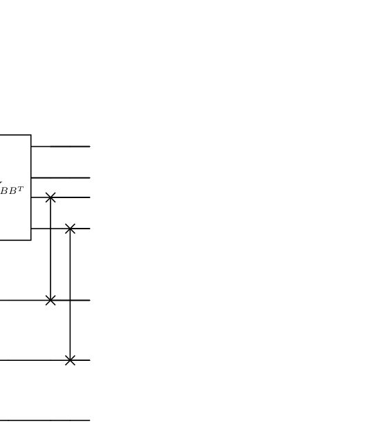
<figcaption class="paper-figure-caption"><b>Fig 1.</b> Figure 1: The quantum circuit for block-encoding of Aj,j−2,k,l.</figcaption>
</figure>
<figure class="paper-figure-card">
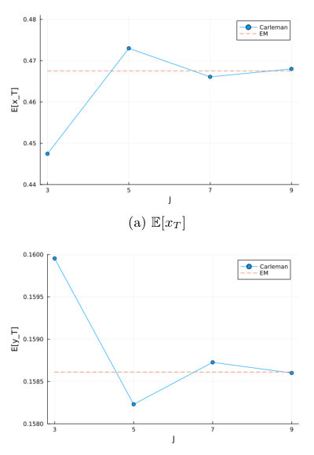
<figcaption class="paper-figure-caption"><b>Fig 2.</b> Figure 2: CL-based approximation of the expectation E[XT ] of XT that follows Eq. (151). In (a) (resp. (c)), the CL-based approximation c xT (resp. c yT ) of E[xT ] (resp. E[yT ]) for various J is plotted in blue solid, along with the EM-based Monte-Carlo approximation xT (resp. yT ) as a reference in red dashed. In (b) (resp. (d)), we plot |c xT −xT | (resp. |c yT −yT |).</figcaption>
</figure>
</div>

<p><strong>Summary.</strong> This paper presents a quantum algorithm to estimate expectations related to solutions of high-dimensional nonlinear stochastic differential equations (SDEs). It employs Carleman Linearization to linearize the problem, allowing the use of quantum ODE solvers. The key achievement is demonstrating that the estimation error decays exponentially with the linearization order, achieving a query complexity that scales polylogarithmically with the system dimension.</p>
<p><strong>Why it may be interesting.</strong> This work provides a concrete quantum computational pathway for analyzing complex, non-Markovian dynamics governed by SDEs, which is highly relevant for simulating open quantum systems or quantum field theories where such equations arise.</p>
<details>
<summary>Detailed structure</summary>
<p><strong>Main problem.</strong> Developing a quantum algorithm to estimate expectations of functions of solutions to high-dimensional nonlinear stochastic differential equations (SDEs).</p>
<p><strong>Main result.</strong> The method achieves an estimation error that decreases exponentially with the Carleman linearization truncation order $J$, requiring only a polylog(N) number of queries to unitaries.</p>
<p><strong>Method.</strong> The approach uses Carleman Linearization (CL) to transform the nonlinear SDE into a linear system, whose expectations are then solved using a quantum ODE solver and overlap estimation.</p>
<p><strong>Model / system.</strong> The model is a high-dimensional nonlinear stochastic differential equation (SDE) of the form $\mathrm{d} \mathbf{X}_t = \left(A(t) \mathbf{X}_t + F(t) \mathbf{X}_t^{\otimes s}
ight) \mathrm{d} t + B(t) \mathrm{d} \mathbf{W}_t$.</p>
<p><strong>Key observables.</strong> The expectation $\mathbb{E}[f(\mathbf{X}_t)]$ of a linear function of the solution $\mathbf{X}_t$, and the CL error.</p>
<p><strong>Important parameters / regimes.</strong> The dimension $N$, the truncation order $J$, and the relative smallness of the nonlinear and noise terms compared to the linear term.</p>
<p><strong>Assumptions / limitations.</strong> The nonlinear and noise terms in the SDE must be sufficiently small relative to the linear term for the exponential convergence of the CL error.</p>
<p><strong>Figures summary.</strong> Not specified.</p>
<p><strong>Paper structure.</strong> The paper first introduces the problem and the CL method, detailing the derivation of the linear ODE for expectations. It then establishes the quantum computational primitives (block-encoding) and finally presents the rigorous analysis bounding the estimation error and deriving the polylogarithmic query complexity.</p>
</details>
<details>
<summary>Abstract</summary>
<p>Addressing nonlinear numerical problems in quantum computing remains challenging, but several approaches, including Carleman linearization (CL), have been proposed to construct quantum algorithms for such problems. In this work, we develop a CL-based method for a high-dimensional nonlinear stochastic differential equation (SDE) $\mathrm{d} \mathbf{X}_t = \left(A(t) \mathbf{X}_t + F(t) \mathbf{X}_t^{\otimes s}\right) \mathrm{d} t + B(t) \mathrm{d} \mathbf{W}_t$ for an $\mathbb{R}^N$-valued random process $\mathbf{X}_t$, aiming at quantum speed-up with respect to the dimension $N$. We introduce auxiliary processes $\mathbf{Y}^j_t$ that approximate $\mathbf{X}_t^{\otimes j}$, derive a linearized system of SDEs for them, and obtain the linear ordinary differential equation (ODE) governing their expectations. We then apply a quantum ODE solver to it and, from the resulting quantum state, extract an estimate for the expectation of a linear function of $\mathbf{X}_t$ by overlap estimation. We show that, provided the nonlinear and noise terms in the SDE are sufficiently small relative to the linear term, the CL error decreases exponentially with the truncation order $J$ in CL, and we can estimate the target expectation with a ${\rm polylog}(N)$ number of queries to unitaries encoding coefficient matrices $A$, $F$, and $B$. Finally, we also run a numerical demonstration for an SDE related to Langevin dynamics, observing the exponential decay of the CL error as $J$ increases.</p>
</details>
<p><sub><a href="#top">↑ back to top</a></sub></p>

<p><a id="paper-2610.27054"></a></p>
<h3 id="nambu-goldstone-bosons-and-quantum-fisher-information"><a href="http://arxiv.org/abs/2610.27054v1">Nambu-Goldstone Bosons and Quantum Fisher Information</a></h3>
<p><strong>Authors:</strong> Eugene Chen, Daniel Green<br>
<strong>Type:</strong> theory · <strong>Category:</strong> other · <strong>PDF:</strong> <a href="https://arxiv.org/pdf/2610.27054v1">https://arxiv.org/pdf/2610.27054v1</a><br>
<strong>Analysis basis:</strong> full PDF text, analyzed in chunks
<strong>Topic relevance:</strong> <code>analog quantum simulation</code> <strong>2/5</strong> · <code>quantum measurements</code> <strong>2/5</strong> · <code>Keldysh / 2PI / non-Gaussian methods</code> <strong>1/5</strong></p>
<div class="figure-strip-hint">↔ Scroll figures horizontally</div>
<div class="paper-figures-scroll">
<figure class="paper-figure-card">
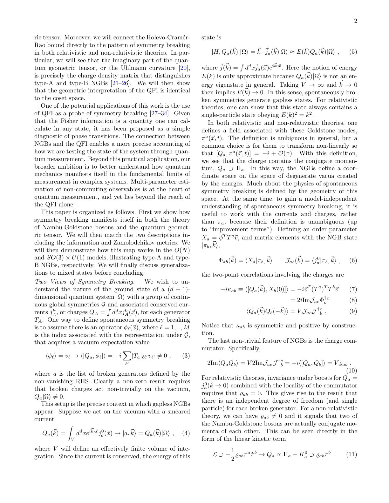
<figcaption class="paper-figure-caption"><b>Fig 1.</b> Low-resolution page preview, page 2</figcaption>
</figure>
<figure class="paper-figure-card">
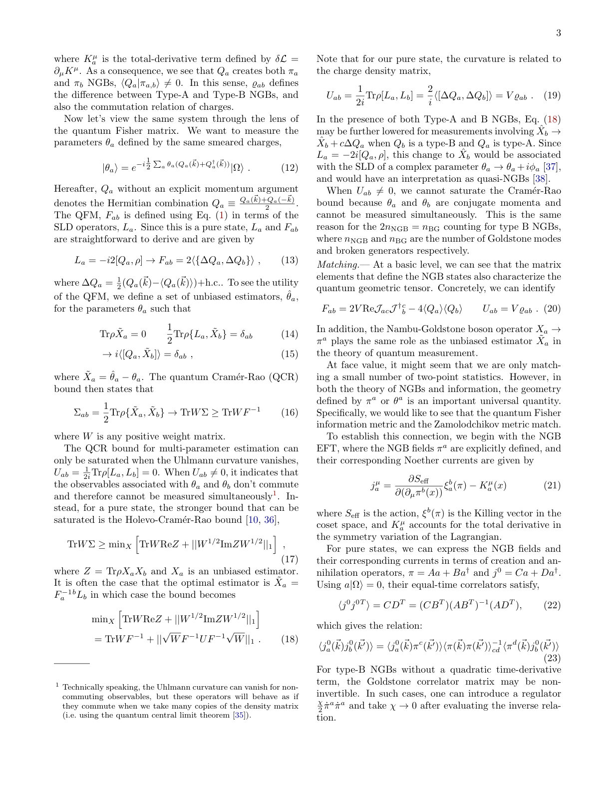
<figcaption class="paper-figure-caption"><b>Fig 2.</b> Low-resolution page preview, page 3</figcaption>
</figure>
<figure class="paper-figure-card">
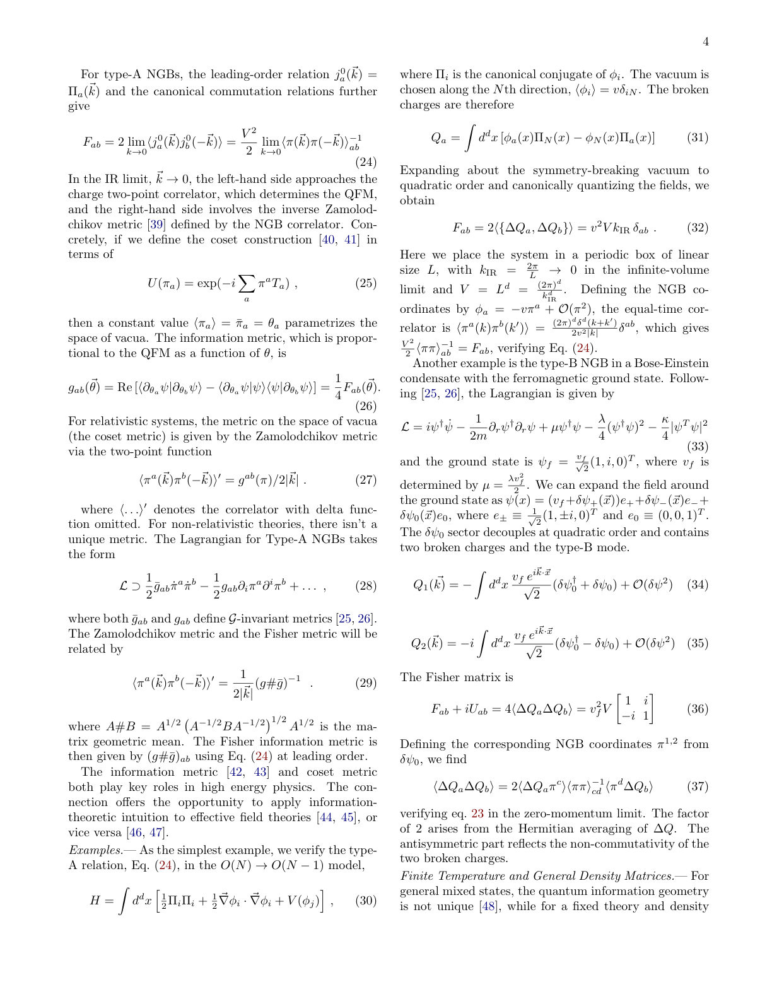
<figcaption class="paper-figure-caption"><b>Fig 3.</b> Low-resolution page preview, page 4</figcaption>
</figure>
<figure class="paper-figure-card">
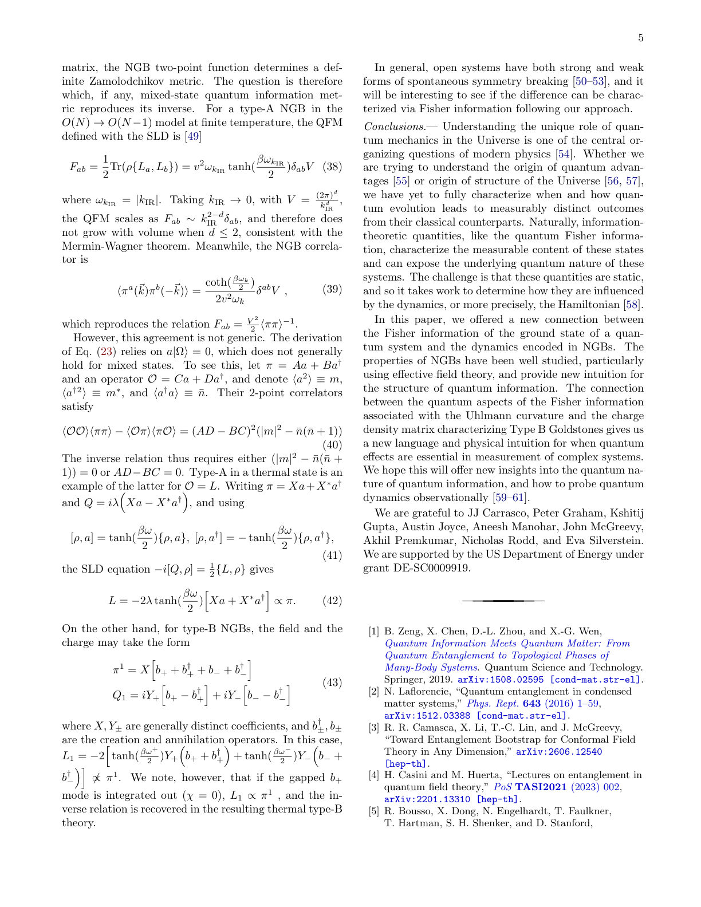
<figcaption class="paper-figure-caption"><b>Fig 4.</b> Low-resolution page preview, page 5</figcaption>
</figure>
<figure class="paper-figure-card">
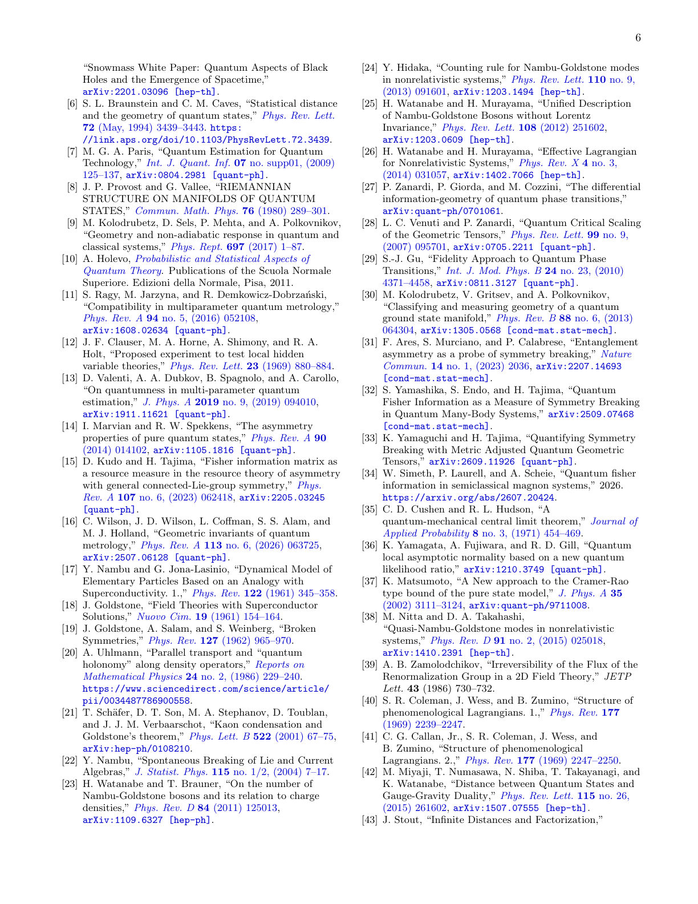
<figcaption class="paper-figure-caption"><b>Fig 5.</b> Low-resolution page preview, page 6</figcaption>
</figure>
</div>

<p><strong>Summary.</strong> This theoretical paper establishes a profound equivalence between the Quantum Fisher Information (QFI) quantifying quantum distinguishability and the geometric structure (Zamolodchikov metric) governing Nambu-Goldstone bosons arising from broken symmetries. By relating the QFI to current correlators, the authors provide a powerful, model-independent tool to study symmetry breaking dynamics, extending the insights to finite temperatures and mixed states.</p>
<p><strong>Why it may be interesting.</strong> This work provides a deep, quantitative link between fundamental concepts in quantum information theory (QFI) and low-energy effective field theories (NGBs), offering new tools to probe symmetry breaking dynamics observationally.</p>
<details>
<summary>Detailed structure</summary>
<p><strong>Main problem.</strong> The paper aims to establish a model-independent equivalence between the Quantum Fisher Information (QFI) associated with ground states of systems with continuous symmetries and the geometry defined by Nambu-Goldstone bosons (NGBs). It also generalizes this connection to finite temperature and mixed states.</p>
<p><strong>Main result.</strong> The information metric derived from the QFI is shown to be identical to the Zamolodchikov metric defining the coset space geometry of the NGBs. Furthermore, the Uhlmann curvature relates directly to the charge density matrix distinguishing Type-A and Type-B NGBs.</p>
<p><strong>Method.</strong> The authors use the Quantum Fisher Matrix (QFM) formalism, relating it to conserved charges and current correlators. They employ techniques like the Thermofield Double state for mixed states and analyze the saturation of the Cramér-Rao bound.</p>
<p><strong>Model / system.</strong> The study focuses on quantum systems exhibiting continuous symmetries, particularly those undergoing spontaneous symmetry breaking, leading to NGBs. Examples include the O(N) model and Bose-Einstein condensates.</p>
<p><strong>Key observables.</strong> Quantum Fisher Matrix (QFM), Quantum Geometric Tensor (QGT), Nambu-Goldstone Boson correlators, Zamolodchikov metric, Uhlmann curvature, and the charge density matrix.</p>
<p><strong>Important parameters / regimes.</strong> Continuous symmetry parameters ($   heta_a$), temperature ($eta$), and momentum/wavevector ($\vec{k}$).</p>
<p><strong>Assumptions / limitations.</strong> The analysis often assumes pure states initially, and later uses the Thermofield Double state to map mixed state expectation values to pure state calculations. The saturation of the Cramér-Rao bound is analyzed under specific conditions.</p>
<p><strong>Figures summary.</strong> Not specified in the notes, but the analysis involves comparing derived metrics (QFI vs. Zamolodchikov) and analyzing correlator structures.</p>
<p><strong>Paper structure.</strong> The paper progresses by first establishing the QFI connection to NGBs in the ground state (pure states). It then extends this equivalence to finite temperature and analyzes the structure of the information geometry using the Uhlmann curvature. Finally, it tackles the generalization to mixed states using TFD techniques and analyzing bound saturation.</p>
</details>
<details>
<summary>Abstract</summary>
<p>The quantum Fisher matrix and geometric tensor are powerful tools for quantifying the nature of quantum systems. Unfortunately, the formalism needed to compute these quantities is opaque and has limited the development of physical intuition for their behavior, even in the ground state. For quantum systems with continuous symmetries, we know the ground state can be understood in a model-independent and intuitive way from the correlation functions of conserved currents and charges. In this paper, we demonstrate an equivalence between the quantum Fisher matrix associated with the ground states of systems with continuous symmetries and the Nambu-Goldstone. bosons produced by broken generators. We will show that the information metric defined by the Fisher matrix is the same as the Zamolodchikov metric that defines the coset space of the system. Next we show that the Uhlmann curvature associated with multi-parameter estimation is the same as the charge density matrix that defines the difference between type-A and type-B Nambu-Goldstone bosons. We demonstrate these connections in several examples and discuss the generalization to finite temperature.</p>
</details>
<p><sub><a href="#top">↑ back to top</a></sub></p>

<p><a id="paper-2610.28239"></a></p>
<h3 id="observable-level-framework-for-finite-key-security-in-coherent-one-way-quantum-key-distribution"><a href="http://arxiv.org/abs/2610.28239v1">Observable-Level Framework for Finite-Key Security in Coherent-One-Way Quantum Key Distribution</a></h3>
<p><strong>Authors:</strong> Aryan Kuntal, Utkarsh Giradkar, Mudit Chaudhary, Amit D. Lad<br>
<strong>Type:</strong> theory · <strong>Category:</strong> quantum information and computing · <strong>PDF:</strong> <a href="https://arxiv.org/pdf/2610.28239v1">https://arxiv.org/pdf/2610.28239v1</a><br>
<strong>Analysis basis:</strong> full PDF text, analyzed in chunks
<strong>Topic relevance:</strong> <code>Full counting statistics</code> <strong>2/5</strong> · <code>quantum measurements</code> <strong>2/5</strong> · <code>methods for driven-dissipative</code> <strong>1/5</strong></p>
<div class="figure-strip-hint">↔ Scroll figures horizontally</div>
<div class="paper-figures-scroll">
<figure class="paper-figure-card">
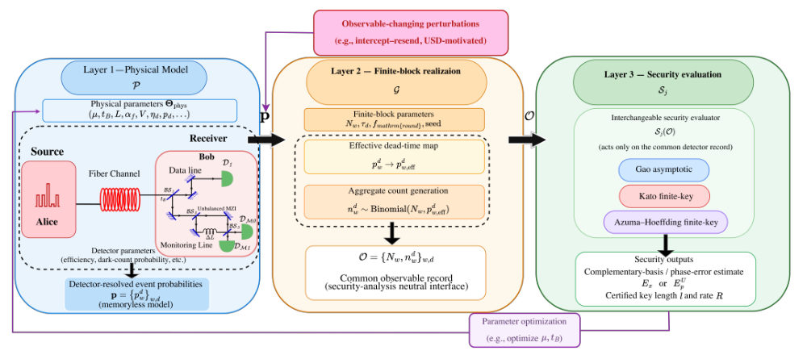
<figcaption class="paper-figure-caption"><b>Fig 1.</b> FIG. 1. Observable-level architecture of the finite-key COW-QKD framework. Layer 1 maps the physical source, channel, receiver, and memoryless detector parameters to the detector-resolved event-probability vector p. Within Bob’s receiver, BS1 directs a fraction tB of the received field to the data detector DT , while the complementary output enters the monitoring line. The monitoring measurement is represented in the model by an equivalent unbalanced two-path interferometer formed by BS2 and BS3, producing the outputs DM0 and DM1. The experimental receiver of Cao et al. implements the corresponding monitoring measurement using an asymmetric Michelson interferometer with Faraday mirrors...</figcaption>
</figure>
<figure class="paper-figure-card">
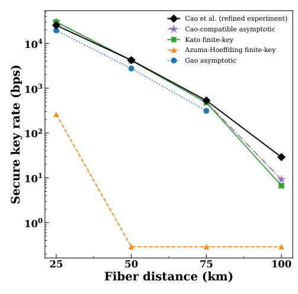
<figcaption class="paper-figure-caption"><b>Fig 2.</b> FIG. 2. Secure-key-rate comparison against experimental benchmarks. The discrete markers denote the refined exper- imental secure-key rates reported by Cao et al. [18]. The Cao-compatible asymptotic, Kato finite-key, and Azuma– Hoeffding finite-key results are evaluated using the corre- sponding reported operating parameters at each distance. The Gao asymptotic result is evaluated separately as an op- timized reference under its own state-preparation convention and therefore does not constitute a like-for-like reproduction of the experimental operating points. Azuma–Hoeffding re- sults are shown only at operating points for which the adopted finite-key bound certifies a positive secret key.</figcaption>
</figure>
<figure class="paper-figure-card">
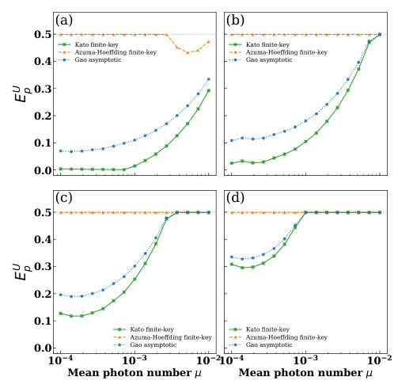
<figcaption class="paper-figure-caption"><b>Fig 3.</b> FIG. 3. Controlled same-record comparison of finite-key phase-error estimation. The phase-error upper bound EU p is evaluated as a function of the coherent-state mean photon number µ at (a) 25, (b) 50, (c) 75, and (d) 100 km. At each (L, µ) point, the Kato and Azuma–Hoeffding finite-key eval- uators receive the identical detector-resolved record O; their separation therefore reflects only the statistical security treat- ment. The Gao asymptotic result is included as a reference.</figcaption>
</figure>
<figure class="paper-figure-card">
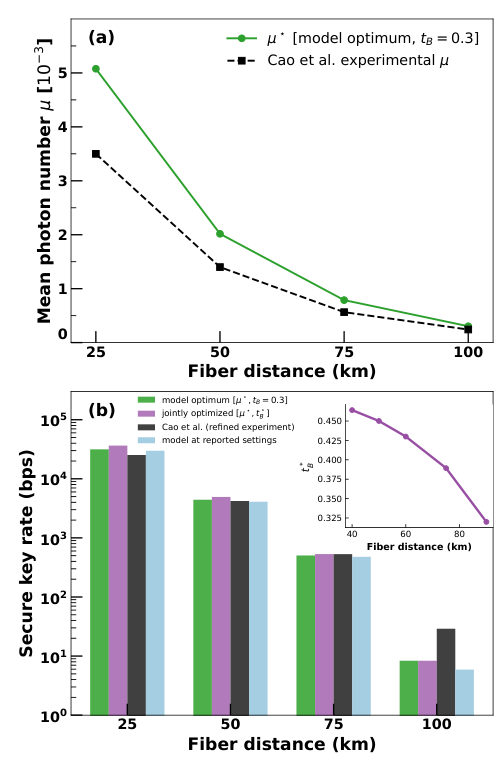
<figcaption class="paper-figure-caption"><b>Fig 4.</b> FIG. 4. Model-based security-aware operating-point opti- mization relative to the experimental settings reported by Cao et al. [18]. (a) Optimized coherent-state mean photon num- ber µ⋆obtained by maximizing the calculated Kato finite-key secure-key rate at fixed receiver splitting fraction tB = 0.3, compared with the corresponding experimentally employed values of µ at 25, 50, 75, and 100 km. (b) Secure-key-rate comparison among the model evaluated at the experimen- tally reported operating parameters, optimization of µ alone at fixed tB = 0.3, joint optimization of (µ, tB), and the refined experimentally reported secure-key rates of Cao et al. [18]. Joint optimization increases the...</figcaption>
</figure>
</div>

<p><strong>Summary.</strong> This paper presents a novel, modular, observable-level simulation framework for analyzing the finite-key security of Coherent-One-Way QKD. By separating physical modeling, statistical counting, and security evaluation, the authors provide a robust tool for comparing theoretical security bounds with real-world experimental measurements. The framework allows for controlled optimization and stress-testing against various eavesdropping attacks.</p>
<p><strong>Why it may be interesting.</strong> This work provides a rigorous, computational interface for testing quantum communication protocols against realistic experimental constraints, which is crucial for advancing practical quantum networking technologies.</p>
<details>
<summary>Detailed structure</summary>
<p><strong>Main problem.</strong> The paper addresses the need for a consistent framework to analyze finite-key security in Coherent-One-Way (COW) Quantum Key Distribution (QKD). It aims to treat physical modeling, finite experimental statistics, and security inference separately to avoid conflating assumptions.</p>
<p><strong>Main result.</strong> The developed observable-level framework successfully reproduces key rates close to experimental reports at intermediate distances, and joint optimization of key parameters ($\mu$ and $t_B$) significantly boosts the predicted secure-key rate.</p>
<p><strong>Method.</strong> The authors developed a modular, three-stage simulation pipeline ($\Theta_{phys} 	o p 	o O 	o S_j$) that maps physical parameters to observable counts, which are then analyzed using advanced concentration inequalities like Kato's and Azuma-Hoeffding.</p>
<p><strong>Model / system.</strong> The system analyzed is the Coherent-One-Way (COW) QKD protocol, which uses weak coherent pulses. The model is a computational framework that simulates the entire process from physical source parameters through detector-resolved event probabilities to final security estimates.</p>
<p><strong>Key observables.</strong> Detector-resolved event probabilities, aggregate detector counts ($\mathbf{O}$), empirical gains ($\mathbf{b}_{Qd}$), Z-basis bit-error rate ($\mathbf{E}_z$), and the phase-error upper bound ($\mathbf{E}_u^p$).</p>
<p><strong>Important parameters / regimes.</strong> Coherent-state mean photon number ($\mu$), receiver splitting fraction ($t_B$), channel loss, and the block size ($N$) used for finite-key estimation.</p>
<p><strong>Assumptions / limitations.</strong> The framework assumes that the physical modeling, finite-key statistics, and security evaluation can be treated as distinct, modular steps. Virtual gains must be bounded using experimentally accessible decoy statistics.</p>
<p><strong>Figures summary.</strong> Figures illustrate the layered architecture, comparisons between finite-key treatments (Kato vs. Azuma-Hoeffding), and the dependence of the secure-key rate on optimization parameters ($\mu$, $t_B$) and adversarial perturbations ($p_{IR}$, $q$).</p>
<p><strong>Paper structure.</strong> The paper introduces the observable-level pipeline, verifies it against analytical relations, demonstrates the use of concentration inequalities for finite-key analysis, and finally applies the framework to optimize key rates and test against representative eavesdropping attacks.</p>
</details>
<details>
<summary>Abstract</summary>
<p>Practical security analysis of Coherent-One-Way (COW) quantum key distribution requires optical-device modeling, finite experimental statistics, and security inference to be treated consistently without conflating assumptions. We present a modular observable-level simulation framework organized through the pipeline θ_phys -&gt; p -&gt; O -&gt; S_j(O), in which physical source, channel, receiver, and detector parameters determine detector-resolved event probabilities, a finite-block layer applies an effective dead-time treatment and generates aggregate detector counts, and interchangeable security evaluators act on the same observable record. The framework is verified against analytical optical, virtual-state, and finite-key relations and evaluated against reported experimental COW-QKD operating points. The Kato finite-key calculation reproduces the refined experimentally reported secure-key rates most closely at intermediate distances, with deviations of -1.5% at 50 km and -10.3% at 75 km. Monitoring bright-port decoy counts agree within 0.9-2.4%, while remaining distance-dependent dark-port residual identifies the principal model-sensitive observable of the present physical description. Applying Kato and Azuma-Hoeffding concentration treatments to identical detector records isolates the effect of finite-key statistical inference and shows substantially tighter Kato phase-error bounds for rare-event monitoring records studied here. Holding the Kato evaluator fixed, joint optimization of coherent-state mean photon number mu and receiver splitting fraction t_B increases model-predicted secure-key rate by 7.4-20.2% relative to optimization of mu alone with t_B = 0.3. The framework therefore provides a common computational interface for experimental reproduction, controlled security-model comparison, model-based protocol optimization, and modular adversarial stress testing in COW-QKD.</p>
</details>
<p><sub><a href="#top">↑ back to top</a></sub></p>

<p><a id="paper-2610.27063"></a></p>
<h3 id="bilocal-flows-and-universality-with-field-dependent-regulators"><a href="http://arxiv.org/abs/2610.27063v1">Bilocal flows and universality with field-dependent regulators</a></h3>
<p><strong>Authors:</strong> Alfio M. Bonanno, Renata Ferrero<br>
<strong>Type:</strong> theory · <strong>Category:</strong> statistical mechanics · <strong>PDF:</strong> <a href="https://arxiv.org/pdf/2610.27063v1">https://arxiv.org/pdf/2610.27063v1</a><br>
<strong>Analysis basis:</strong> full PDF text, analyzed in chunks
<strong>Topic relevance:</strong> <code>Keldysh / 2PI / non-Gaussian methods</code> <strong>2/5</strong> · <code>non-equilibrium universality</code> <strong>2/5</strong></p>
<div class="figure-strip-hint">↔ Scroll figures horizontally</div>
<div class="paper-figures-scroll">
<figure class="paper-figure-card">
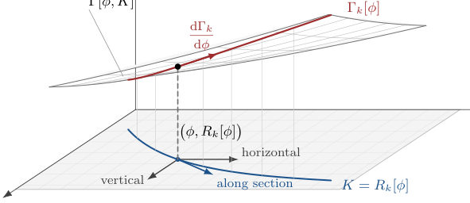
<figcaption class="paper-figure-caption"><b>Fig 1.</b> Figure 1: Geometry of the bilocal formulation. The kernel-dependent effective average action Γ[ϕ, K] is a surface over the (ϕ, K) configuration space. A regulator prescription selects the section K = Rk[ϕ] (blue), whose lift to the surface defines the reduced action Γk[ϕ] = Γ  ϕ, Rk[ϕ]  (red). At a point of the section, a field variation at fixed kernel is horizontal and a variation of the kernel at fixed field is vertical; the tangent to the section decomposes into these two components, so that d/dϕ = ∂ϕ + (δRk/δϕ) ∂K. Differentiation of the reduced action therefore carries both a horizontal and a vertical contribution.</figcaption>
</figure>
<figure class="paper-figure-card">
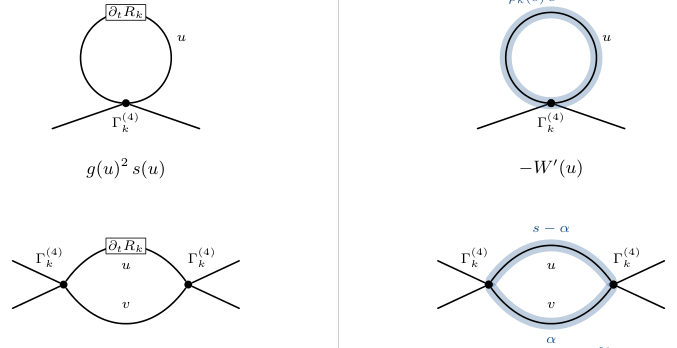
<figcaption class="paper-figure-caption"><b>Fig 2.</b> Figure 2: Comparison of the two vertex hierarchies generated by the same spectral kernel W, for the two-point flow (top) and for one channel and orientation of the four-point bubble (bottom); u and v are the spectral arguments of the internal lines. In the fixed-kernel hierarchy (left) the field derivatives act on Gk at fixed Rk, and the scale derivative stays on one internal line. In the direct proper-time hierarchy (right), the derivatives act on the operator function W(Hk). The blue shading indicates the proper-time evolution around the loop, with the two vertices dividing it into intervals of length s −α and α in the bubble diagram.. The two-point kernels already differ at the symmetric...</figcaption>
</figure>
<figure class="paper-figure-card">
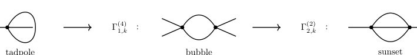
<figcaption class="paper-figure-caption"><b>Fig 3.</b> Figure 3: Perturbative origin of the two-loop anomalous dimension in massless λϕ4 theory. The one- loop two-point flow gives a momentum-independent tadpole. Momentum dependence first appears in the one-loop four-point bubble. Reinserting this form factor into the two-point flow generates the two-loop sunset topology responsible for the wave-function renormalization.</figcaption>
</figure>
</div>

<p><strong>Summary.</strong> This paper develops the concept of 'bilocal flows' to correctly handle functional renormalization group (FRG) calculations when the momentum regulator depends on the quantum fields. By identifying and incorporating the necessary 'mismatch' terms, the authors prove that the flow equations correctly restore universal physical results, such as the two-loop anomalous dimension, regardless of the specific regulator chosen.</p>
<p><strong>Why it may be interesting.</strong> While focused on QFT, the rigorous mathematical treatment of flow equations and the restoration of universal constants through systematic corrections (like the mismatch tensor) provides deep methodological insights applicable to non-equilibrium statistical mechanics and critical phenomena.</p>
<details>
<summary>Detailed structure</summary>
<p><strong>Main problem.</strong> The paper addresses the issue of maintaining universality in functional renormalization group (FRG) flows when the regulator depends on the quantum fields, as omitting associated terms can spoil the expected universal behavior.</p>
<p><strong>Main result.</strong> By introducing bilocal flows, the authors establish an exact sum rule showing that the completed flow correctly restores the universal two-loop anomalous dimension coefficient ($C_\eta = 1/6$) regardless of the specific admissible regulator profile used.</p>
<p><strong>Method.</strong> The core method involves constructing and analyzing bilocal flow equations, which treat the effective action as dependent on both the field and the cutoff kernel. They quantify the discrepancy between different flow derivations using a 'mismatch tensor' ($Q$).</p>
<p><strong>Model / system.</strong> The analysis is primarily demonstrated using massless $\lambda\phi^4$ theory in four dimensions, but the framework is general for any field-dependent regulator prescription, applicable to gauge theories and quantum gravity.</p>
<p><strong>Key observables.</strong> The anomalous dimension ($\eta$) is the key observable; the universal two-loop coefficient $C_\eta = 1/6$ is the target diagnostic.</p>
<p><strong>Important parameters / regimes.</strong> The regulator profile ($R_k[\phi]$) and the cutoff kernel ($K$) are central parameters; the theory is analyzed in the massless limit.</p>
<p><strong>Assumptions / limitations.</strong> The construction is general for any admissible regulator profile, though the authors note that the implication for universal coefficients in gauge theories is not fully settled by the analysis.</p>
<p><strong>Figures summary.</strong> Not specified in the notes, but the text describes the geometry of the effective action $\Gamma[\phi, K]$ over $(\phi, K)$ space.</p>
<p><strong>Paper structure.</strong> The paper follows a logical progression: defining the bilocal flow setup, comparing different flow derivations (establishing the mismatch tensor $Q$), proving the completion theorem via an exact sum rule, and finally applying the mechanism to the $\lambda\phi^4$ model.</p>
</details>
<details>
<summary>Abstract</summary>
<p>Many functional renormalization group flows employ a regulator that depends on the fields, as in proper-time and spectrally adjusted flows and in background-independent formulations of gauge theories and quantum gravity. Such a regulator generates additional terms in the flow, and their omission may spoil universality. We introduce bilocal flows, in which the effective action depends on the field and on the cutoff kernel as independent variables. The construction identifies the additional terms, and an exact sum rule shows that the first nontrivial coefficient of the anomalous dimension coincides with that of a fixed-regulator flow for every admissible regulator profile, so that universality is restored. For massless $λφ^4$ theory with a proper-time regulator, the reduced flow gives a profile-dependent anomalous dimension, while the completed flow gives the universal two-loop coefficient $C_η=1/6$ for every profile.</p>
</details>
<p><sub><a href="#top">↑ back to top</a></sub></p>

<p><a id="paper-2610.28185"></a></p>
<h3 id="black-holes-are-about-quantum-information"><a href="http://arxiv.org/abs/2610.28185v1">Black Holes are about Quantum Information</a></h3>
<p><strong>Authors:</strong> Aude Corbeel, Sebastian De Haro<br>
<strong>Type:</strong> theory · <strong>Category:</strong> other · <strong>PDF:</strong> <a href="https://arxiv.org/pdf/2610.28185v1">https://arxiv.org/pdf/2610.28185v1</a><br>
<strong>Analysis basis:</strong> full PDF text, analyzed in chunks
<strong>Topic relevance:</strong> <code>quantum measurements</code> <strong>2/5</strong> · <code>Keldysh / 2PI / non-Gaussian methods</code> <strong>1/5</strong> · <code>methods for driven-dissipative</code> <strong>1/5</strong></p>
<div class="figure-strip-hint">↔ Scroll figures horizontally</div>
<div class="paper-figures-scroll">
<figure class="paper-figure-card">
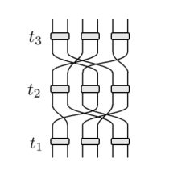
<figcaption class="paper-figure-caption"><b>Fig 1.</b> Figure 1: All-to-all circuit with parallel processing. At each step, every qubit in- teracts with one other qubit by means of a gate, although no qubit interacts with more than one other qubit at that step. The pairings can change between steps. The circuit depicts the gradual transformation of a state of six qubits (the lines) by the action of gates (the boxes).</figcaption>
</figure>
<figure class="paper-figure-card">
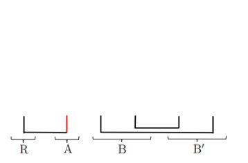
<figcaption class="paper-figure-caption"><b>Fig 2.</b> Figure 3: Entanglement structure before and after applying the scrambling unitary UAB (dashed box) for a system with a notion of spatial locality. Left: the initial state consists of independent EPR pairs. Right: the resulting multipartite entan- glement structure is characteristic of Page scrambling.</figcaption>
</figure>
</div>

<p><strong>Summary.</strong> This paper reviews quantum information-theoretic approaches to the black hole information paradox, focusing on the Hayden-Preskill model. It argues that treating black holes as quantum circuits allows for an operational understanding of information release, highlighting fast scrambling and entanglement as key mechanisms. This shifts the focus from philosophical debates to a concrete, computational modeling framework.</p>
<p><strong>Why it may be interesting.</strong> It provides a powerful, abstract framework using quantum information tools (like those used in QEC) to model complex, non-equilibrium quantum processes in extreme gravity regimes, which is highly relevant for open quantum systems theory.</p>
<details>
<summary>Detailed structure</summary>
<p><strong>Main problem.</strong> The paper addresses the black hole information paradox, specifically focusing on the Page-time paradox, by analyzing how quantum information theory can resolve the apparent loss of information during black hole evaporation.</p>
<p><strong>Main result.</strong> The analysis shows that modeling black holes as quantum circuits, utilizing concepts like fast scrambling and entanglement as a resource, provides a useful operational framework for understanding information release under unitary evolution.</p>
<p><strong>Method.</strong> The authors review and analyze quantum information-theoretic approaches, particularly focusing on the Hayden-Preskill model, which treats the black hole as a quantum channel.</p>
<p><strong>Model / system.</strong> The system under study is a black hole, which is modeled as a finite-dimensional quantum system whose dynamics are represented by a quantum circuit. The framework relies on the assumption of unitary evolution.</p>
<p><strong>Key observables.</strong> Black hole entropy ($S_{BH}$), information release dynamics, and the time scale for information recovery.</p>
<p><strong>Important parameters / regimes.</strong> The area of the black hole horizon ($A_{BH}$), and the assumption of unitarity.</p>
<p><strong>Assumptions / limitations.</strong> The central assumption is the 'central dogma' of unitarity, treating the black hole as an ordinary quantum system, which the authors note is a necessary modeling assumption for tractability.</p>
<p><strong>Paper structure.</strong> The paper reviews the information controversy, analyzes the Hayden-Preskill model using quantum information tools, and discusses the implications of treating black holes as quantum computational systems.</p>
</details>
<details>
<summary>Abstract</summary>
<p>We review and analyse quantum information-theoretic approaches to black hole evaporation that purport to bring us closer to a resolution of the black hole information paradox. Our focus is on the Page-time paradox and on the contribution of the Hayden-Preskill model to understanding information release under the assumption of unitary evaporation. In this model, the black hole is taken to be a finite-dimensional quantum system whose dynamics can be represented by a quantum circuit, and its information-processing and communication abilities are studied. We identify the assumptions underlying this modelling and highlight two key features, fast scrambling dynamics and entanglement as a resource, that underpin the information release in the model. We argue that this reasoning exemplifies a broader change in how information is used in black hole physics, in which quantum information theory now provides a useful operational modelling framework. This application avoids earlier philosophical objections insofar as it is not based on epistemic ignorance and does not regard information as a substance. This line of reasoning has become central to the debate and, as such, warrants greater attention from the philosophy of physics community.</p>
</details>
<p><sub><a href="#top">↑ back to top</a></sub></p>

<p><a id="paper-2610.28349"></a></p>
<h3 id="comath575math-compiling-photonics-into-digital-quantum-circuits"><a href="http://arxiv.org/abs/2610.28349v1">CO$Φ$ - COmpiling PHotonics into dIgital quantum circuits</a></h3>
<p><strong>Authors:</strong> Grzegorz Czelusta, Marcin Markiewicz, Jakub Mielczarek, Artur Miroszewski<br>
<strong>Type:</strong> theory · <strong>Category:</strong> quantum information and computing · <strong>PDF:</strong> <a href="https://arxiv.org/pdf/2610.28349v1">https://arxiv.org/pdf/2610.28349v1</a><br>
<strong>Analysis basis:</strong> full PDF text, analyzed in chunks
<strong>Topic relevance:</strong> <code>analog quantum simulation</code> <strong>2/5</strong> · <code>interference shaping light</code> <strong>1/5</strong> · <code>quantum measurements</code> <strong>1/5</strong></p>
<div class="figure-strip-hint">↔ Scroll figures horizontally</div>
<div class="paper-figures-scroll">
<figure class="paper-figure-card">
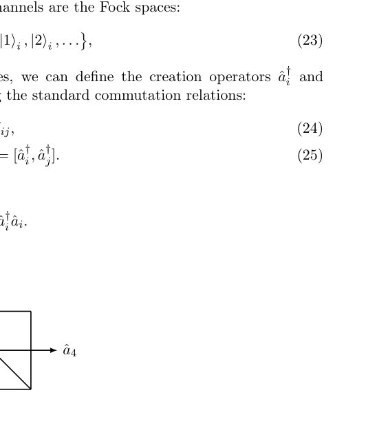
<figcaption class="paper-figure-caption"><b>Fig 1.</b> Figure 1: Schematic diagram of the quantum beam splitter.</figcaption>
</figure>
<figure class="paper-figure-card">
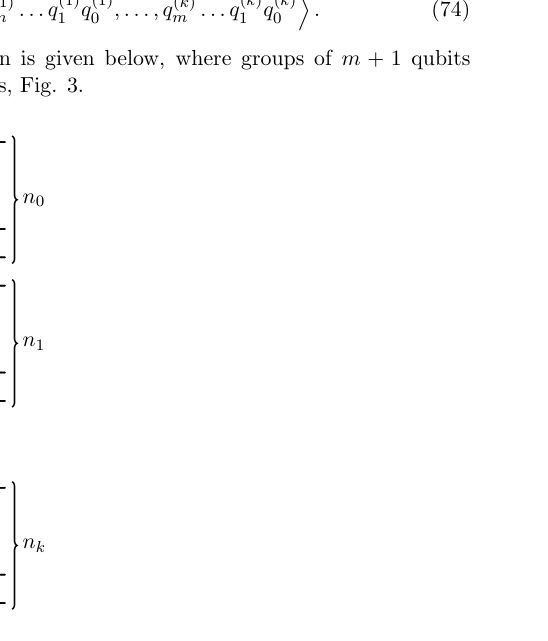
<figcaption class="paper-figure-caption"><b>Fig 2.</b> Figure 3: Notation for multi-mode quantum circuit.</figcaption>
</figure>
<figure class="paper-figure-card">
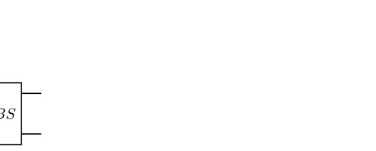
<figcaption class="paper-figure-caption"><b>Fig 3.</b> Figure 5: Exemplary optical circuit with symmetric beam splitter BS (UBS(π/4), 0).</figcaption>
</figure>
<figure class="paper-figure-card">
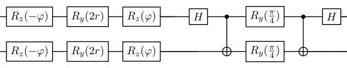
<figcaption class="paper-figure-caption"><b>Fig 4.</b> Fig. 7 shows a simple 4-mode optical circuit which can be regarded as a prototype of the boson sampling circuit. Here, the BS corresponds to symmetric beam splitters, for which (θ, ϕ) = (π/4, 0). However, please notice that for the truncation under consideration (N = 2) the circuit provides a basic example of fermionic sampling.</figcaption>
</figure>
<figure class="paper-figure-card">
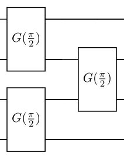
<figcaption class="paper-figure-caption"><b>Fig 5.</b> Figure 8: Quantum circuit corresponding to the optical circuit (7) for N = 2.</figcaption>
</figure>
</div>

<p><strong>Summary.</strong> This paper bridges the gap between photonic quantum optics and qubit-based quantum computing by developing a method to map continuous-variable optical systems onto finite-dimensional quantum circuits. It achieves this by truncating the Fock space and developing a compiler, CO$\Phi$, that translates complex quantum optics programs into standard OpenQASM circuits. This makes simulating photonic processes, particularly for Gaussian Boson Sampling, feasible on current digital quantum hardware.</p>
<p><strong>Why it may be interesting.</strong> This work is highly relevant as it provides a concrete, implementable bridge between the continuous variable physics of quantum optics and the discrete computational model of superconducting or trapped-ion qubits, which is a major goal in quantum information science.</p>
<details>
<summary>Detailed structure</summary>
<p><strong>Main problem.</strong> The paper addresses the fundamental challenge of mapping quantum-optical systems, which inhabit infinite-dimensional Hilbert spaces, onto the finite-dimensional registers used by qubit-based quantum computers.</p>
<p><strong>Main result.</strong> A systematic method is developed to represent fundamental photonic operations (like phase shifts and beam splitters) as explicit quantum circuits for truncated Fock spaces, and a compiler (CO$\Phi$) is provided to automate this process.</p>
<p><strong>Method.</strong> The core method involves truncating the Fock space and utilizing algebraic techniques, including connections to q-deformed oscillator algebras, to derive finite-dimensional representations of continuous-variable operations.</p>
<p><strong>Model / system.</strong> The system modeled is single-mode light described by its Fock space, which is approximated by truncating the infinite basis to a finite dimension $N$. The operations analyzed include phase rotation, displacement, squeezing, and beam splitting.</p>
<p><strong>Key observables.</strong> Photon occupation number ($n$), qubit measurement outcomes, and the resulting photon number distribution in the low-photon-number regime.</p>
<p><strong>Important parameters / regimes.</strong> The truncation dimension ($N$), the deformation parameter ($q$), and the photon number itself are key parameters defining the simulation regime.</p>
<p><strong>Assumptions / limitations.</strong> The primary assumption is the validity of truncating the Fock space, limiting the simulation to the low-photon-number regime, and the successful mapping of continuous-variable physics to discrete qubit gates.</p>
<p><strong>Figures summary.</strong> Figures illustrate the structure of a GBS Compiler package, the sequence of compiling operations to OpenQASM, and examples of measurement decoding showing how qubit outcomes map back to photon counts.</p>
<p><strong>Paper structure.</strong> The paper systematically reviews quantum optics, introduces the truncated Fock space formalism, connects it to q-deformed algebras, establishes the mapping, provides explicit circuit constructions for small $N$, benchmarks the operations, and details the CO$\Phi$ compiler.</p>
</details>
<details>
<summary>Abstract</summary>
<p>Photonic and qubit-based (digital) approaches to quantum computing are largely regarded as separate paradigms. This article aims to bridge these paradigms by developing a method for mapping quantum-optical systems onto qubit-based quantum circuits.   The key ingredient enabling this mapping is the introduction of a truncation of the Fock space describing single-mode optical states. Within this framework, representations of basic photonic operations are developed, including the phase-rotation operator, the displacement operator, the squeezing operator, and the beam splitter. Explicit quantum circuit constructions are provided for Fock-space truncations of dimension $N=2$ and $N=4$. We discuss benchmarking of the implemented operations and identify the regime of applicability and the limitations of the proposed method.   The presented results can be used to simulate quantum optical circuits on qubit-based quantum computers, with special relevance to Gaussian Boson Sampling in the low-photon-number regime. To demonstrate the practical applicability of this approach, we complement the theoretical framework with a Python-based quantum programming tool CO$Φ$ that compiles Blackbird quantum-optics programs into qubit-based OpenQASM circuits using a truncated Fock-space encoding. The compiler is available on GitHub at https://github.com/Quantum-Cosmos-Lab/cophi.</p>
</details>
<p><sub><a href="#top">↑ back to top</a></sub></p>

<p><a id="paper-2610.27926"></a></p>
<h3 id="monodromy-line-defects-on-the-fuzzy-sphere"><a href="http://arxiv.org/abs/2610.27926v1">Monodromy line defects on the fuzzy sphere</a></h3>
<p><strong>Authors:</strong> Jiangyuan Qian<br>
<strong>Type:</strong> theory · <strong>Category:</strong> statistical mechanics · <strong>PDF:</strong> <a href="https://arxiv.org/pdf/2610.27926v1">https://arxiv.org/pdf/2610.27926v1</a><br>
<strong>Analysis basis:</strong> full PDF text, analyzed in chunks
<strong>Topic relevance:</strong> <code>analog quantum simulation</code> <strong>2/5</strong> · <code>methods for driven-dissipative</code> <strong>2/5</strong></p>
<div class="figure-strip-hint">↔ Scroll figures horizontally</div>
<div class="paper-figures-scroll">
<figure class="paper-figure-card">
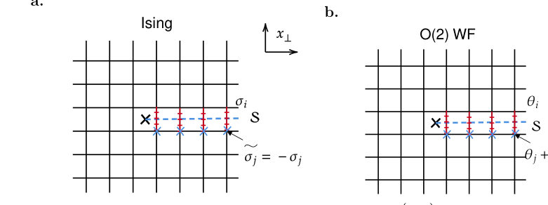
<figcaption class="paper-figure-caption"><b>Fig 1.</b> Figure 1. Lattice implementations of (a) Ising monodromy line defect (b) O(2) monodromy line defect, each panel shows a cross-section in x⊥plane perpendicular to the defect.</figcaption>
</figure>
<figure class="paper-figure-card">
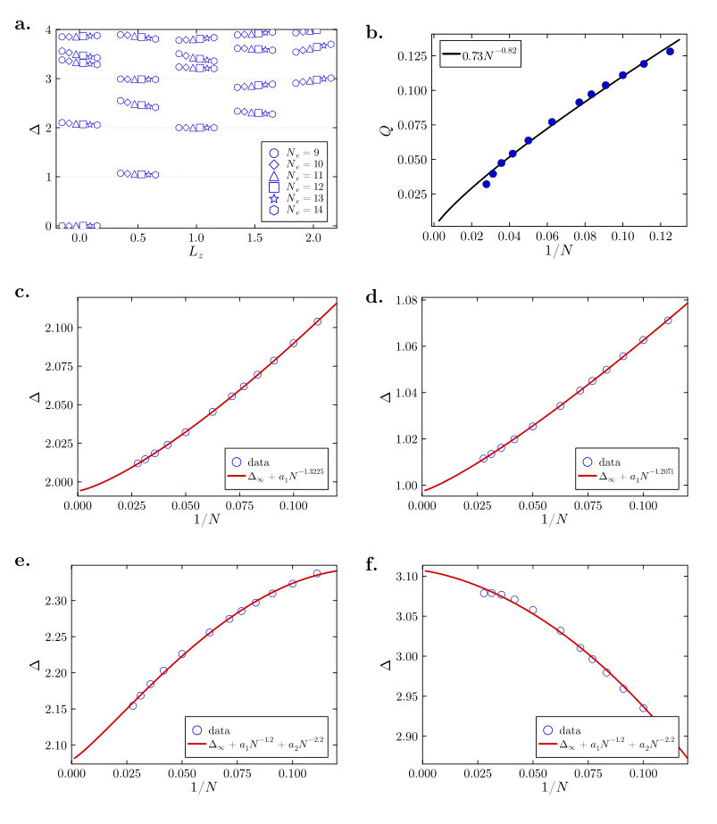
<figcaption class="paper-figure-caption"><b>Fig 2.</b> Figure 2. (a) Conformal tower by ED at the tuned parameters (4.9) and N = 9, ..., 14, (b) the conformal cost for system size up to N = 36. (c) Finite-size fits of scaling dimension ∆ˆS, (d) ∆ˆ ψ1/2, (e) ∆ˆ ψ3/2, (f) ∆t.</figcaption>
</figure>
<figure class="paper-figure-card">
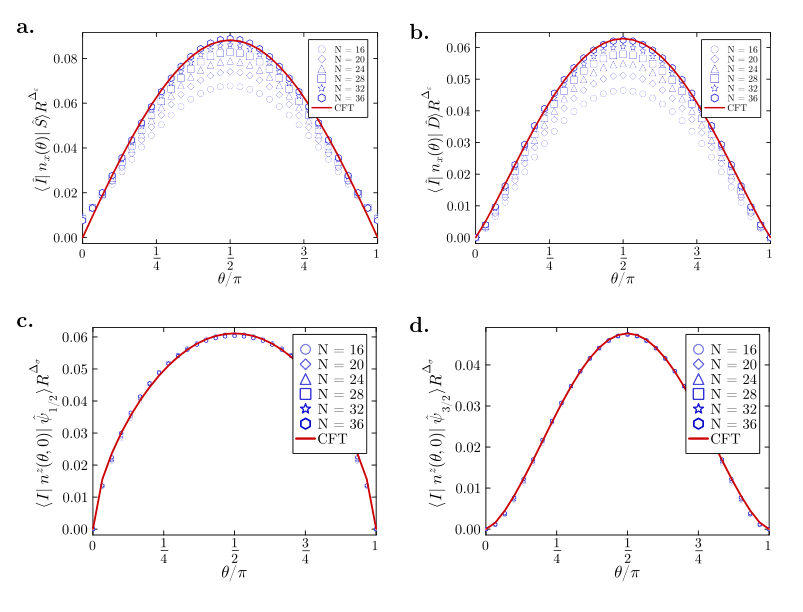
<figcaption class="paper-figure-caption"><b>Fig 3.</b> Figure 3. (a) Vacuum to primary matrix elements ⟨ˆI|nx(Ω)| ˆS⟩, (b) ⟨ˆI|nx(Ω)| ˆD⟩, (c) ⟨ˆI|nz(Ω)| ˆψ1/2⟩, (d) ⟨ˆI|nz(Ω)| ˆψ3/2⟩. The CFT curves are fitted without fixing the bulk and de- fect scaling dimensions</figcaption>
</figure>
<figure class="paper-figure-card">
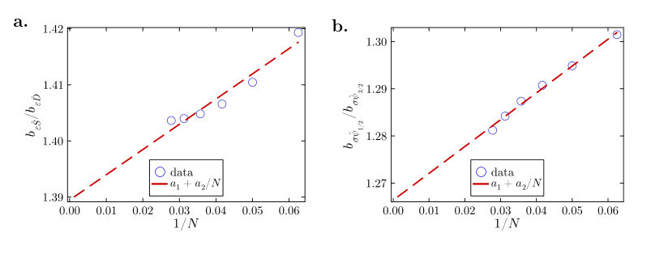
<figcaption class="paper-figure-caption"><b>Fig 4.</b> Figure 4. Finite-size extrapolations of ratios of DOE coefficients for the leading defect operators appearing in the expansion of bulk operator (a) ϵ and (b) σ.</figcaption>
</figure>
<figure class="paper-figure-card">
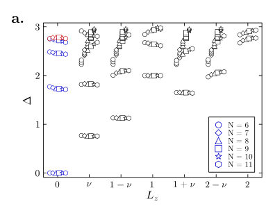
<figcaption class="paper-figure-caption"><b>Fig 5.</b> Figure 5. (a) Conformal towers at the tuned parameters for N = 6, ..., 11. The Z2,RC quantum number is defined only in (0, 0) sector. Blue points have the same Z2,RC quantum number as the vacuum, red points have opposite Z2,RC quantum number. (b) Conformal cost function up to N = 22, both panels show results for ν = 1/4.</figcaption>
</figure>
</div>

<p><strong>Summary.</strong> This paper analyzes monodromy line defects on the fuzzy sphere for both Ising and O(2) models, treating them as dual to charged objects in gauge theories. By employing advanced numerical techniques like DMRG and finite-size scaling, the authors calculate defect scaling dimensions. The key finding is that the defects appear to stabilize into a consistent dCFT structure without fine-tuning.</p>
<p><strong>Why it may be interesting.</strong> The use of fuzzy geometry and defect CFT techniques provides a powerful, non-perturbative tool to study critical phenomena and quantum field theories in condensed matter contexts, which is relevant for understanding strongly correlated systems.</p>
<details>
<summary>Detailed structure</summary>
<p><strong>Main problem.</strong> The paper investigates monodromy line defects, which are dual to charged objects in dual gauge theories, within the framework of the defect bootstrap program.</p>
<p><strong>Main result.</strong> The analysis provides evidence that the monodromy defect reaches a stable defect conformal field theory (dCFT) because the lowest neutral defect scalar dimension is found to be above one, without requiring fine-tuning.</p>
<p><strong>Method.</strong> The study employs fuzzy-sphere regularization, utilizing techniques like exact diagonalization (ED), density matrix renormalization group (DMRG), and finite-size scaling analysis to compute defect scaling dimensions and operator expansion coefficients.</p>
<p><strong>Model / system.</strong> The models studied are the Ising monodromy dCFT and a continuous family of O(2) monodromy defects, regularized on the fuzzy sphere geometry. The Hamiltonians are derived for these systems, incorporating twisted boundary conditions.</p>
<p><strong>Key observables.</strong> Defect scaling dimensions ($\hat{\Delta}$), ratios of defect operator expansion (DOE) coefficients, and energy gaps ($\Delta E$).</p>
<p><strong>Important parameters / regimes.</strong> The twist angle $
u$ for O(2) defects, and coupling constants like $h_x$ and $D$ that govern phase transitions.</p>
<p><strong>Assumptions / limitations.</strong> The analysis relies on the fuzzy-sphere approach as an independent non-perturbative probe, and specific approximations are made when deriving the Hamiltonians (e.g., retaining only $V_0$ and $V_1$ terms).</p>
<p><strong>Figures summary.</strong> Figures illustrate phase diagrams for both the Ising and O(2) models, showing transitions based on coupling parameters. Other figures plot rescaled energy gaps and conformal level spacings to locate critical points.</p>
<p><strong>Paper structure.</strong> The paper systematically introduces the defect bootstrap program, applies the fuzzy-sphere regularization to the Ising and O(2) models, derives the necessary Hamiltonians and master equations, and finally uses numerical methods (DMRG, finite-size scaling) to calculate scaling dimensions and map out phase diagrams.</p>
</details>
<details>
<summary>Abstract</summary>
<p>Monodromy line defects are of interest in the defect bootstrap program and are dual to electrically charged objects in dual gauge field descriptions. We investigate the Ising monodromy dCFT using a fuzzy sphere regularization, by imposing the twisted boundary condition in the UV. We obtain defect scaling dimensions $\hat Δ$ and ratios of defect operator expansion (DOE) coefficients using this method. We extend this machinery to the continuous family of $O(2)$ monodromy defects with twist angle $2πν$. In both cases, the lowest neutral defect scalar lies above dimension one, providing evidence that the monodromy defect reaches a stable dCFT without additional fine tuning.</p>
</details>
<p><sub><a href="#top">↑ back to top</a></sub></p>

<p><a id="paper-2610.27929"></a></p>
<h3 id="constant-depth-quantum-barrier-option-pricing-via-a-static-bivariate-oracle-framework"><a href="http://arxiv.org/abs/2610.27929v1">Constant-Depth Quantum Barrier Option Pricing via a Static Bivariate Oracle Framework</a></h3>
<p><strong>Authors:</strong> Ji-Hui Mo, Yuan-Hong Tao<br>
<strong>Type:</strong> theory · <strong>Category:</strong> quantum information and computing · <strong>PDF:</strong> <a href="https://arxiv.org/pdf/2610.27929v1">https://arxiv.org/pdf/2610.27929v1</a><br>
<strong>Analysis basis:</strong> full PDF text, analyzed in chunks
<strong>Topic relevance:</strong> <code>QC/QI experiment</code> <strong>2/5</strong> · <code>quantum measurements</code> <strong>1/5</strong></p>
<div class="figure-strip-hint">↔ Scroll figures horizontally</div>
<div class="paper-figures-scroll">
<figure class="paper-figure-card">
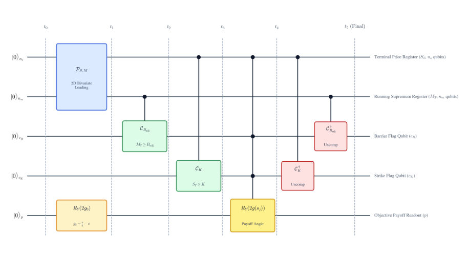
<figcaption class="paper-figure-caption"><b>Fig 1.</b> Figure 1: Static bivariate quantum barrier option pricing circuit architecture based on the Brow- nian reflection principle. The circuit executes state preparation PS,M, evaluates moneyness and barrier conditions via two static ripple-carry comparators, applies a dual-controlled linear rota- tion, and restores ancillae via uncomputation, completely decoupling circuit depth from moni- toring frequency.</figcaption>
</figure>
<figure class="paper-figure-card">
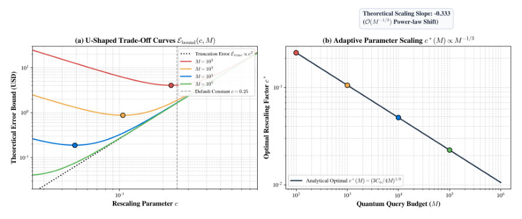
<figcaption class="paper-figure-caption"><b>Fig 2.</b> Figure 2: Theoretical error trade-off as a function of the scaling parameter c and total quantum query budget M. (a) The composite pricing error displays characteristic U-shaped profiles, where dashed lines indicate truncation bounds and solid markers pinpoint global minima c∗(M). (b) Optimal parameter trajectory demonstrating the M −1/3 power-law decay toward finer analytical precision.</figcaption>
</figure>
<figure class="paper-figure-card">
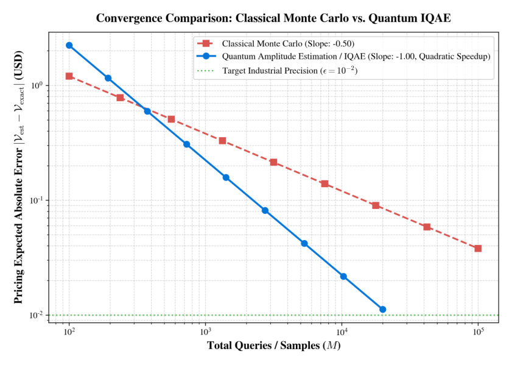
<figcaption class="paper-figure-caption"><b>Fig 3.</b> Figure 3: Asymptotic convergence of pricing estimation errors as a function of total query sam- ples M. Classical Monte Carlo displays the characteristic −0.50 algebraic slope, whereas IQAE equipped with our static bivariate oracle achieves a scaling slope of −0.984, demonstrating the- oretical quadratic quantum acceleration.</figcaption>
</figure>
<figure class="paper-figure-card">
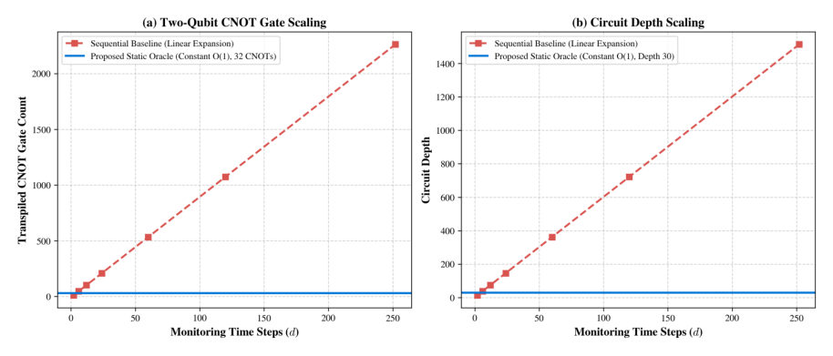
<figcaption class="paper-figure-caption"><b>Fig 4.</b> Figure 4: Transpiled physical resource scaling as a function of monitoring dates d. (a) CNOT gate count scaling; (b) Two-qubit circuit depth scaling. While the sequential baseline explodes linearly, our static bivariate framework remains constant (CNOT = 32, Depth = 30).</figcaption>
</figure>
<figure class="paper-figure-card">
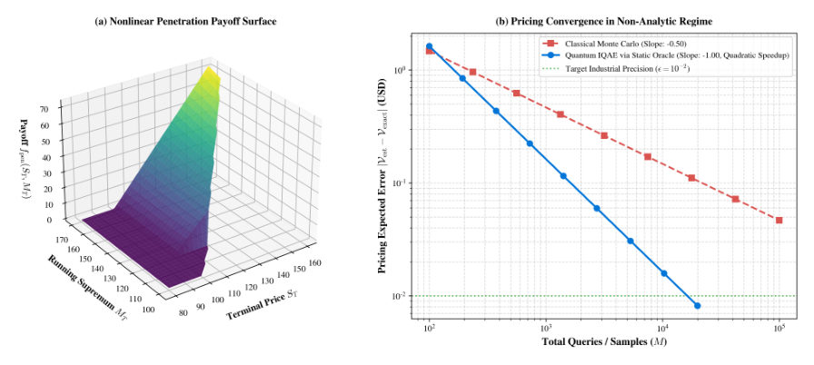
<figcaption class="paper-figure-caption"><b>Fig 5.</b> Figure 5: Pricing benchmarks for nonlinear penetration-dependent barrier options without an- alytical tractability. (a) Payoff surface fpen(ST , MT ) displaying nonlinear warping along the supremum coordinate; (b) Convergence comparison demonstrating that while classical solvers degrade to O(M −1/2), our static quantum oracle sustains O(M −1) scaling.</figcaption>
</figure>
</div>

<p><strong>Summary.</strong> This paper presents a breakthrough quantum algorithm for pricing complex financial derivatives by transforming the path-dependent problem into a static, two-dimensional joint distribution. By leveraging advanced mathematical theorems, the authors design a constant-depth quantum oracle that bypasses the exponential resource scaling of traditional time-stepping quantum simulations. This represents a significant step toward realizing practical quantum advantage in computational finance.</p>
<p><strong>Why it may be interesting.</strong> While applied to finance, the core technique—reducing a path-dependent, time-evolving quantum simulation into a static, low-depth oracle—is a powerful general methodology for quantum simulation of complex, time-correlated quantum systems.</p>
<details>
<summary>Detailed structure</summary>
<p><strong>Main problem.</strong> The primary challenge is developing a quantum algorithm to price path-dependent financial derivatives, like barrier options, without the resource scaling issues associated with simulating the entire price path over many monitoring dates.</p>
<p><strong>Main result.</strong> The authors propose a constant-depth quantum oracle framework that eliminates temporal dependency by projecting the continuous path dynamics onto a static bivariate joint distribution, achieving massive reductions in required quantum resources.</p>
<p><strong>Method.</strong> The method uses the Brownian reflection principle and Girsanov theorem to derive a static joint probability density function $f_{S_T, M_T}(s, m)$, which is then encoded into a constant-depth quantum circuit.</p>
<p><strong>Model / system.</strong> The model is financial option pricing, specifically using Geometric Brownian Motion (GBM) for asset dynamics, and the quantum computation is implemented on superconducting qubits (benchmarked on IBM Eagle).</p>
<p><strong>Key observables.</strong> Relative valuation error (7.84% under noise), CNOT gate count (slashed by 98.59%), and two-qubit circuit depth (slashed by 98.02%).</p>
<p><strong>Important parameters / regimes.</strong> Number of monitoring dates ($d=252$), risk-free rate ($r$), volatility ($\sigma$), and the required precision ($M$).</p>
<p><strong>Assumptions / limitations.</strong> The framework assumes the applicability of the Brownian reflection principle and Girsanov theorem for the projection, and that the Broadie-Glasserman-Kou correction can absorb discrete sampling bias classically.</p>
<p><strong>Figures summary.</strong> Figure 5 compares the quantum oracle's convergence rate ($O(M^{-1})$) against the classical Monte Carlo rate ($O(M^{-1/2})$) for estimating the payoff surface.</p>
<p><strong>Paper structure.</strong> The paper first establishes the limitation of sequential path-discretization ($O(d)$ scaling). It then introduces the mathematical projection onto a static bivariate distribution using advanced stochastic calculus theorems. Finally, it details the constant-depth quantum oracle implementation and benchmarks its performance against noise models.</p>
</details>
<details>
<summary>Abstract</summary>
<p>Quantum amplitude estimation offers a theoretical quadratic speedup over classical Monte Carlo methods for financial derivative pricing. However, extending gate-based algorithms to path-dependent barrier options has historically been hampered by sequential path discretization, where tracking price paths across $d$ monitoring dates incurs a linear escalation in qubit footprint and gate depth ($\mathcal{O}(d)$), posing severe coherence challenges for near-term quantum processors.   In this work, we present a constant-depth quantum pricing framework that fundamentally eliminates the temporal dependency of barrier monitoring. Leveraging the Brownian reflection principle and Girsanov theorem, we project the continuous supremum dynamics onto a static bivariate joint distribution of the terminal price $S_T$ and running supremum $M_T$. This allows decoupling dynamic boundary checks into a static bivariate oracle comprising two parallel comparators and a dual-controlled rotation gate. We prove this architecture reduces circuit depth and comparator complexity from $\mathcal{O}(d)$ to an invariant $\mathcal{O}(1)$, while supporting discrete monitoring via zero-quantum-cost boundary corrections.   Transpilation benchmarks for daily monitoring ($d = 252$) show our framework slashes physical CNOT count by 98.59% (from 2262 to 32) and compresses two-qubit depth by 98.02% (from 1514 to 30 layers). Under a realistic 127-qubit IBM Eagle noise model, the shallow circuit achieves a 7.84% relative valuation error with M3 readout mitigation. Finally, the framework seamlessly extends to nonlinear exotic payoffs lacking analytical solutions, establishing a noise-resilient pathway toward practical quantum advantage in computational finance.</p>
</details>
<p><sub><a href="#top">↑ back to top</a></sub></p>

<p><a id="paper-2610.28614"></a></p>
<h3 id="cumulative-locality-governs-collective-quantum-charging"><a href="http://arxiv.org/abs/2610.28614v1">Cumulative locality governs collective quantum charging</a></h3>
<p><strong>Authors:</strong> Sebastián V. Romero, Xi Chen, Yue Ban<br>
<strong>Type:</strong> theory · <strong>Category:</strong> statistical mechanics · <strong>PDF:</strong> <a href="https://arxiv.org/pdf/2610.28614v1">https://arxiv.org/pdf/2610.28614v1</a><br>
<strong>Analysis basis:</strong> full PDF text, analyzed in chunks
<strong>Topic relevance:</strong> <code>analog quantum simulation</code> <strong>2/5</strong> · <code>correlated / nonlocal dissipation</code> <strong>1/5</strong></p>
<div class="figure-strip-hint">↔ Scroll figures horizontally</div>
<div class="paper-figures-scroll">
<figure class="paper-figure-card">
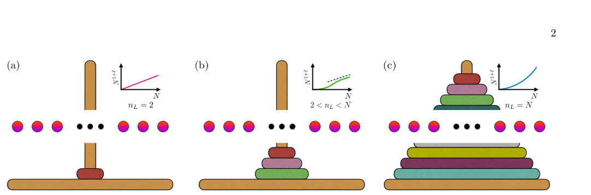
<figcaption class="paper-figure-caption"><b>Fig 1.</b> FIG. 1. Schematic illustration of cumulative locality. A set of spins (spheres) interacts through families of many-body operators generated by the charging Hamiltonian. The diameter of Hanoi-tower plates represents the operator locality, while the stacked plates depict the cumulative hierarchy up to the maximum locality nL. a, For nL = 2, only local and two-body terms are present, leading to extensive scaling. b, For a fixed 2 &lt; nL &lt; N, the locality hierarchy is truncated, leading to a crossover around nL ∼N and asymptotically extensive scaling for nL ≪N. c, For nL = N, the system reaches the fully global regime (all operators in equation (2) are present), enabling superextensive scaling.</figcaption>
</figure>
<figure class="paper-figure-card">
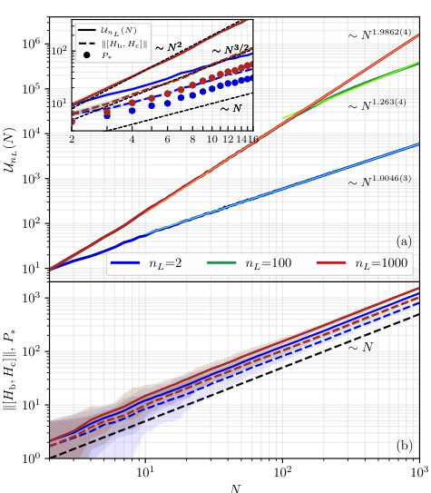
<figcaption class="paper-figure-caption"><b>Fig 2.</b> FIG. 2. Scaling of the charging power bound. a, The bound UnL(N) in equation (5) for nL = {2, 100, 1000}. Data points are fitted to f(N) = aN b, excluding N ≤100 for nL = 100 and N ≤10 otherwise. The nL = 100 and nL = 1000 curves overlap for N ≤100. The inset compares the bound with the exact commutator norm ∥[Hb, Hc]∥and the maximum charging power P∗for N ∈[2, 16]. b, Exact commutator norms (solid) and P∗(dashed) for the quadratic battery subclass, with nL = {2, 100, 1000}. All cases remain extensive despite the increasing locality cutoff. All results (both a and b) are averaged over 32 disorder realizations, with shaded areas indicating the max-min range.</figcaption>
</figure>
<figure class="paper-figure-card">
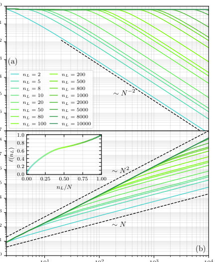
<figcaption class="paper-figure-caption"><b>Fig 3.</b> FIG. 3. Link between participation ratio and charging power scaling. a, Participation ratio η as a function of N for locality cutoffs nL ranging from nL = 2 to 10000. b, Corresponding upper bounds UnL(N) for the same locality cutoffs. The inset shows the fitted scaling exponent ℓ(nL) obtained by fitting UnL(N) to aN 1+ℓusing data with N &gt; nL, while for the fully global endpoint nL = N = 10000, all system sizes are included in the fit. All results are averaged over a hundred disorder realizations.</figcaption>
</figure>
<figure class="paper-figure-card">
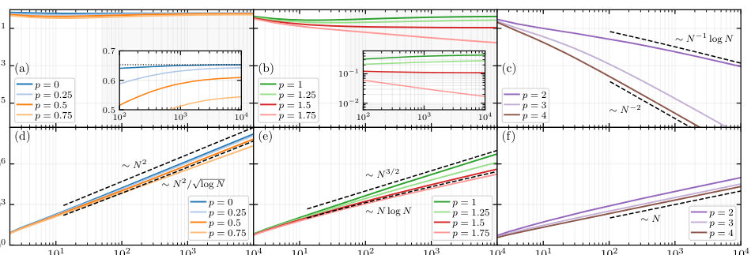
<figcaption class="paper-figure-caption"><b>Fig 4.</b> FIG. 4. Scaling under power-law locality-decaying couplings. Participation ratios ηN(p) (a-c) and charging power upper bounds eUp(N) (d-f) for N ∈[2, 10000] and p ∈[0, 4]. Zoomed insets in a and b magnify the large-N behavior with ηcrit shown as a dotted line in a. All results are averaged over a hundred disorder realizations.</figcaption>
</figure>
<figure class="paper-figure-card">
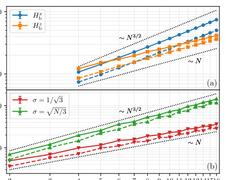
<figcaption class="paper-figure-caption"><b>Fig 5.</b> FIG. 5. Performance of SYK and global chargers. Ex- act operator norms ∥[Hb, Hc]∥and maximum charging powers P∗(solid and dashed lines, respectively) are computed for a, the q = 4 SYK model using the batteries Hx b (blue) and Hz b (orange); and b, the global charger with σ2 = N/3 (blue) and σ2 = 1/3 (orange). While SYK results are averaged over 128 disorder realizations, global charger results are averaged over 5 · 105 due to the increasing variance with system size.</figcaption>
</figure>
</div>

<p><strong>Summary.</strong> This paper establishes that achieving super-extensive charging power in quantum batteries requires a specific, hierarchical structure of interactions called 'cumulative locality.' The authors derive mathematical bounds on the charging power by analyzing the commutator of the system Hamiltonians, linking the scaling advantage directly to the participation ratio of the contributing many-body operators.</p>
<p><strong>Why it may be interesting.</strong> This work provides a rigorous, quantitative framework for understanding how spatial correlations (locality) in interacting quantum systems dictate macroscopic performance metrics, which is highly relevant for designing quantum devices.</p>
<details>
<summary>Detailed structure</summary>
<p><strong>Main problem.</strong> The research aims to determine the precise conditions required for quantum batteries to achieve superextensive charging power, moving beyond the limitations of global operators.</p>
<p><strong>Main result.</strong> Superextensive charging advantage requires a 'cumulative locality' structure in the charger Hamiltonian, and the scaling is quantitatively linked to the participation ratio of the relevant many-body operators.</p>
<p><strong>Method.</strong> The authors derive upper bounds on the charging power by analyzing the norm of the commutator between the battery and charger Hamiltonians, relating this bound to the system's locality structure.</p>
<p><strong>Model / system.</strong> The system models quantum batteries (QBs) using free-fermionic chargers and a local battery Hamiltonian ($H_b$). The analysis extends to general quadratic Hamiltonians and the Sachdev-Ye-Kitaev (SYK) model.</p>
<p><strong>Key observables.</strong> Instantaneous charging power $P(t)$, the upper bound $\|[H_b, H_c]\|$, and the effective participation number ($\mathcal{N}_1$) or participation ratio ($\eta$).</p>
<p><strong>Important parameters / regimes.</strong> The locality cutoff ($n_L$) and the power-law decay exponent ($p$) characterizing the coupling strength of the charger Hamiltonian.</p>
<p><strong>Assumptions / limitations.</strong> The analysis often relies on assuming specific decay rates for couplings (e.g., power-law decay $L^{-p}$) and sometimes assumes dominance by specific operator families ($C_2$).</p>
<p><strong>Figures summary.</strong> Figures illustrate how the upper bound scales with $n_L$ (FIG. 2), how the participation ratio $\eta$ and the power-scaling exponent $\ell(n_L)$ change with $n_L$ (FIG. 3), and the asymptotic behavior of $\eta$ versus the decay exponent $p$ (FIG. S3, S4).</p>
<p><strong>Paper structure.</strong> The paper progresses by first establishing the necessity of cumulative locality for scaling, deriving the commutator bound, and then quantitatively analyzing the scaling of this bound and the participation ratio ($\eta$) across different locality decay regimes ($p$), culminating in asymptotic results for $   ext{E}[\eta_N(p)]$.</p>
</details>
<details>
<summary>Abstract</summary>
<p>Quantum batteries can outperform their classical counterparts through collective quantum effects, yet the conditions enabling such advantage remain unclear. Using a generic class of free-fermionic chargers we prove that global operators are insufficient for scalable superextensive charging and that a cumulative hierarchy of many-body operators is required, with the structure of the battery determining the degree of advantage. This is obtained by relating the charging power to the norm of the commutator between the battery and charger Hamiltonians and deriving an upper bound only capturing noncommuting terms. Moreover, we revisit the concept of participation number and propose an effective definition that accounts for the relative strength of the contributing terms, correlating it with the charging power scaling. Not limited to quadratic Hamiltonians, our results establish cumulative locality as a key resource for quantum charging advantage.</p>
</details>
<p><sub><a href="#top">↑ back to top</a></sub></p>

<p><a id="paper-2610.27179"></a></p>
<h3 id="large-deviations-in-stochastic-dynamics-a-hamiltonian-perspective"><a href="http://arxiv.org/abs/2610.27179v1">Large Deviations in Stochastic Dynamics: A Hamiltonian Perspective</a></h3>
<p><strong>Authors:</strong> Lorenzo Cirigliano, William D. Piñeros, Anna Poggialini, Grant M. Rotskoff, Eric Vanden-Eijnden<br>
<strong>Type:</strong> theory · <strong>Category:</strong> statistical mechanics · <strong>PDF:</strong> <a href="https://arxiv.org/pdf/2610.27179v1">https://arxiv.org/pdf/2610.27179v1</a><br>
<strong>Analysis basis:</strong> full PDF text, analyzed in chunks
<strong>Topic relevance:</strong> <code>Keldysh / 2PI / non-Gaussian methods</code> <strong>2/5</strong> · <code>methods for driven-dissipative</code> <strong>1/5</strong></p>
<div class="figure-strip-hint">↔ Scroll figures horizontally</div>
<div class="paper-figures-scroll">
<figure class="paper-figure-card">
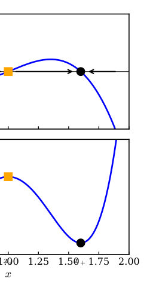
<figcaption class="paper-figure-caption"><b>Fig 1.</b> Figure 1: Deterministic dynamics of the Schlögl model. Top: drift b(x) = k1cB + k3cA x2 −k0x −k2x3. Bottom: potential U(x) = − R b(x) dx. Parameters: k1cB = 0.8, k0 = 2.9, k3cA = 3.1, k2 = 1. Black dots: stable fixed points; orange square: unstable fixed point. Arrows indicate the direction of relaxation.</figcaption>
</figure>
<figure class="paper-figure-card">
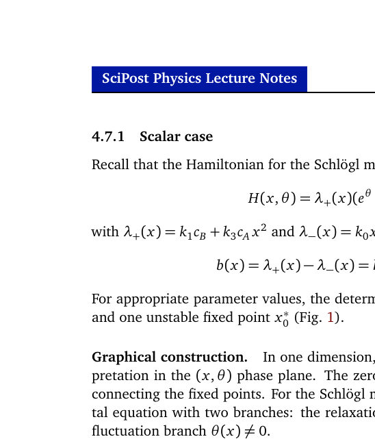
<figcaption class="paper-figure-caption"><b>Fig 2.</b> Fig. 2(a) shows this phase portrait. Starting from a stable fixed point x−, the quasipotential V(x−, x) is computed by integrating along the fluctuation branch:</figcaption>
</figure>
<figure class="paper-figure-card">
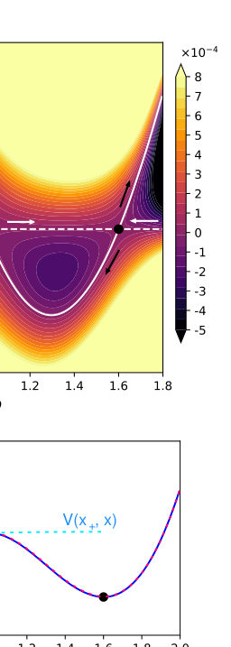
<figcaption class="paper-figure-caption"><b>Fig 3.</b> Figure 2: (a) Phase portrait for the bistable Schlögl model showing the Hamiltonian contours H(x,θ). Black disks indicate stable fixed points x−(left) and x+ (right); the orange square marks the unstable fixed point at xs. White lines represent the zero-energy surface H(x,θ) = 0: the dashed horizontal line (θ = 0) corresponds to deterministic relaxation, while the solid curve (θ ̸= 0) represents optimal fluctuation paths. Arrows indicate the direction of motion along each branch. The quasipotential V(x−, x) for x ≤xs equals the area between the two branches from x−to x. (b) The global quasipotential V(x), obtained by patching V(x−, x) and V(x+, x) with appropriate constants. Adapted from [22].</figcaption>
</figure>
<figure class="paper-figure-card">

<figcaption class="paper-figure-caption"><b>Fig 4.</b> Figure 3: Rescaled logarithm of the stationary distribution for the Schlögl model as the system size Ω= 1/ϵ increases, showing convergence to the quasipotential V(x) rather than the naïve potential U(x). For the parameters shown, x−is the stable phase according to the quasipotential, while the naïve potential incorrectly predicts x+ as stable. Parameters: k1 = 0.8, k0 = 2.9, k3 = 3.1, k2 = 1. Reproduced from [22].</figcaption>
</figure>
<figure class="paper-figure-card">

<figcaption class="paper-figure-caption"><b>Fig 5.</b> Fig. 6 shows the optimal transition paths for L = 40 compartments. The transitions x−→x+ and x+ →x−proceed via qualitatively different mechanisms: one involves nucleation of a localized domain, while the other occurs more uniformly. This asymmetry is a hallmark of nonequlibrium phase coexistence.</figcaption>
</figure>
</div>

<p><strong>Summary.</strong> This lecture notes provide a comprehensive introduction to large deviations theory for stochastic systems, unifying the analysis of SDEs and jump processes. It reveals that the probability of rare events can be recast as a variational problem solved using Hamiltonian mechanics. This framework is crucial for understanding metastability and transition rates in complex physical systems.</p>
<p><strong>Why it may be interesting.</strong> The deep connection between stochastic dynamics, rare events, and classical Hamiltonian mechanics (via the action principle) provides powerful tools for analyzing non-equilibrium processes relevant in open quantum systems and chemical dynamics.</p>
<details>
<summary>Detailed structure</summary>
<p><strong>Main problem.</strong> The paper develops a unified theoretical framework to analyze exponentially rare fluctuations (large deviations) in general stochastic dynamical systems.</p>
<p><strong>Main result.</strong> It shows that the Large Deviation Principle (LDP) can be derived systematically across various limits (small noise, large volume, long time) by mapping the problem onto a variational principle governed by a Hamiltonian structure.</p>
<p><strong>Method.</strong> The core methodology involves applying the Wentzel-Kramers-Brillouin (WKB) analysis to the backward Kolmogorov equation, connecting the LDP to solutions of the Hamilton-Jacobi equation.</p>
<p><strong>Model / system.</strong> The theory is applied to general Stochastic Differential Equations (SDEs) and Markov Jump Processes (MJPs). The analysis uses a running example, the Schlögl model of chemical bistability, to illustrate the concepts.</p>
<p><strong>Key observables.</strong> The rate function (or quasi-potential), which quantifies the exponential decay rate of rare event probabilities, and the associated Hamiltonian structure.</p>
<p><strong>Important parameters / regimes.</strong> The noise strength $\epsilon$, which is taken to zero ($\epsilon 	o 0$), and the time limit $T 	o \infty$.</p>
<p><strong>Assumptions / limitations.</strong> The noise covariance matrix $D(t, x)$ is assumed positive-definite and invertible; formal derivations are presented, with rigorous proofs deferred.</p>
<p><strong>Paper structure.</strong> The paper systematically develops the theory by treating three asymptotic regimes: the small-noise limit for SDEs, the large-volume limit for MJPs, and the long-time limit, culminating in the Hamiltonian formulation derived from the path integral.</p>
</details>
<details>
<summary>Abstract</summary>
<p>These lecture notes present an introduction to large deviations in stochastic dynamical systems, adapted from a lecture series given at the Les Houches school ``Large Deviations: Theory and Applications'' in July 2024. The exposition develops the theory through a unified methodology: WKB analysis of backward Kolmogorov equations, which reveals the Hamiltonian structure underlying all large deviation principles considered here. We treat three asymptotic regimes systematically. First, the small-noise limit for stochastic differential equations and the large-volume limit for Markov jump processes, where the Large Deviation Principle emerges from the Law of Large Numbers through progressively finer characterizations of fluctuations. Second, the long-time limit combined with small noise, yielding the quasipotential formalism for metastability and transition rates in both equilibrium and nonequlibrium systems. Third, the long-time limit at finite noise, connecting to spectral methods via tilted generators and enabling reduction of multiscale systems.We survey computational approaches including minimum action methods, their geometric variants for quasipotential calculations, and neural network techniques. The Schlögl model of chemical bistability serves as a running example, illustrating both scalar and spatially extended settings. Appendices provide self-contained background on stochastic calculus and Markov jump processes.</p>
</details>
<p><sub><a href="#top">↑ back to top</a></sub></p>

<p><a id="paper-2610.27663"></a></p>
<h3 id="lattice-symmetry-breaking-and-strain-control-of-single-math632math-magnetism-in-namath633mathcomath634mathsbomath635math"><a href="http://arxiv.org/abs/2610.27663v1">Lattice symmetry breaking and strain control of single-$\mathbf{q}$ magnetism in Na$_3$Co$_2$SbO$_6$</a></h3>
<p><strong>Authors:</strong> Yuchen Gu, Wu Xie, Xintong Li, Junhong Liu, Xianghong Jin, Dmitry Khalyavin, Fabio Orlandi, Pascal Manuel, Ping Miao, Yuan Li<br>
<strong>Type:</strong> both · <strong>Category:</strong> strongly correlated electrons · <strong>PDF:</strong> <a href="https://arxiv.org/pdf/2610.27663v1">https://arxiv.org/pdf/2610.27663v1</a><br>
<strong>Analysis basis:</strong> full PDF text, analyzed in chunks
<strong>Topic relevance:</strong> <code>analog quantum simulation</code> <strong>2/5</strong> · <code>quantum measurements</code> <strong>1/5</strong></p>
<div class="figure-strip-hint">↔ Scroll figures horizontally</div>
<div class="paper-figures-scroll">
<figure class="paper-figure-card">

<figcaption class="paper-figure-caption"><b>Fig 1.</b> FIG. 1. Lattice-symmetry test of single-q and multi-q mag- netism. (a) Schematics of the parent Co honeycomb layer in NCSO (upper left), the proposed symmetry-preserving double-q state (upper right), and the two Cb 2-related single-q domains (lower panels). Single-q order breaks Cb 2 and per- mits a triclinic distortion with α and/or γ ̸= 90◦. (b,c) High- resolution neutron diffraction profiles measured at TREND, CSNS [30–32], at 50 K (orange triangles) and 4.3 K (blue cir- cles): (b) the (3, 0, 0) reflection of an NCTO single crystal and (c) the (4, 6, 0) reflection of NCSO powder. NCTO shows no detectable splitting or additional broadening, whereas NCSO develops distinct (4, 6, 0) and (4,...</figcaption>
</figure>
<figure class="paper-figure-card">

<figcaption class="paper-figure-caption"><b>Fig 2.</b> FIG. 3. Strain-induced selection of a zigzag domain in NCSO. Left: Photograph and schematic of the crystal bonded with GE varnish to a glass-fiber-reinforced plastic substrate. Gray arrows indicate the quasi-uniaxial compression generated per- pendicular to the fibers upon cooling. Right: In-plane mag- netic moment in units of 10−4 emu (radial scale), measured in a 0.1 T field at 10 K (orange) and 2 K (blue) as a func- tion of angle from b. At fixed field, the moment is propor- tional to the susceptibility. At 2 K, the maximum response lies approximately 30◦from a, implying an ordered-moment direction approximately 30◦from b. The spin schematics il- lustrate fields parallel and...</figcaption>
</figure>
<figure class="paper-figure-card">

<figcaption class="paper-figure-caption"><b>Fig 3.</b> FIG. 2. Reflection dependence and magnetic origin of the tri- clinic distortion in NCSO. (a-c) Neutron powder diffraction profiles at 4.3 and 12 K: (a) the nuclear (0, 6, 0) and (3, 3, −1) reflections, (b) the overlapping nuclear (1, 3, −3) and (2, 0, 2) reflections, with comparable calculated intensities, and (c) the magnetic (3/2, −5/2, −2) reflection. (d) Temperature de- pendence of the nuclear-peak splittings and magnetic Bragg intensity, together with the bulk magnetization, separately normalized. (e) Splittings of selected nuclear reflections and their description by the common triclinic lattice metric dis- played in (f). Separate full-pattern Le Bail refinements yield α =...</figcaption>
</figure>
<figure class="paper-figure-card">

<figcaption class="paper-figure-caption"><b>Fig 4.</b> FIG. 4. Intrinsic field-induced phase boundaries revealed by detwinning. (a) Angular dependence of dM/dH at 2 K with and without strain. The white dashed curve in the strained map marks the suppressed transition branch contributed by the other Cb 2-related domain. (b) Polar plot of transition fields extracted from the strained data: AFM1/2-AFM1/3 (blue) and AFM1/3-FM (pink), with angles measured from b. Insets show the zigzag AFM1/2 and up-up-down AFM1/3 arrange- ments for the selected domain; shaded sectors schematically illustrate flexible spin reorientation in AFM1/3.</figcaption>
</figure>
</div>

<p><strong>Summary.</strong> This work investigates the magnetic ordering in $  ext{Na}_3   ext{Co}_2   ext{SbO}_6$ by linking magnetic structure to lattice symmetry. Using neutron diffraction and controlled uniaxial strain, the authors confirm single-$\mathbf{q}$ magnetism via lattice distortion and demonstrate that strain can deterministically select magnetic domains. This establishes magnetoelastic coupling as a key tool for diagnosing and tuning quantum magnetic states.</p>
<p><strong>Why it may be interesting.</strong> The explicit coupling between lattice strain and magnetic domain selection provides a powerful, experimentally verifiable method to probe the underlying symmetry constraints of complex magnetic Hamiltonians, which is highly relevant for understanding emergent quantum phases.</p>
<details>
<summary>Detailed structure</summary>
<p><strong>Main problem.</strong> The study aims to distinguish between single-$\mathbf{q}$ and multi-$\mathbf{q}$ magnetic ordering in the Kitaev magnet $   ext{Na}_3   ext{Co}_2   ext{SbO}_6$ by coupling the magnetic state to the lattice symmetry.</p>
<p><strong>Main result.</strong> Neutron diffraction reveals a spontaneous lattice distortion in $  ext{Na}_3   ext{Co}_2   ext{SbO}_6$ consistent with single-$\mathbf{q}$ order, while strain control was shown to select magnetic domains, establishing magnetoelastic coupling as a diagnostic tool.</p>
<p><strong>Method.</strong> The research combines high-resolution neutron diffraction measurements to probe lattice symmetry breaking with controlled uniaxial strain application to manipulate magnetic domains.</p>
<p><strong>Model / system.</strong> The system is the honeycomb cobaltate $ ext{Na}_3   ext{Co}_2   ext{SbO}_6$, analyzed using a bond-equivalent nearest-neighbor $J-K-\Gamma-\Gamma'$ model derived from the Kitaev model framework.</p>
<p><strong>Key observables.</strong> Lattice symmetry breaking (monoclinic-to-triclinic distortion), splitting of nuclear reflections, domain selection via strain, and magnetic susceptibility anisotropy.</p>
<p><strong>Important parameters / regimes.</strong> Magnetic transition temperature ($T_N$), strain magnitude ($\epsilon_{ab}$), and the sign/magnitude of the effective Kitaev interaction ($K_{	ext{eff}}$).</p>
<p><strong>Assumptions / limitations.</strong> The analysis assumes that the lattice distortion is directly coupled to the magnetic order parameter, and that strain can induce domain selection by coupling to the magnetic shear.</p>
<p><strong>Figures summary.</strong> Figures illustrate the splitting of diffraction reflections confirming symmetry breaking in $  ext{NCSO}$ versus the lack thereof in $ ext{NCTO}$, and show how strain alters the angular dependence of magnetic susceptibility, revealing domain selection.</p>
<p><strong>Paper structure.</strong> The paper first uses diffraction to distinguish single-$\mathbf{q}$ from multi-$\mathbf{q}$ order. It then applies strain to study domain selection, revealing intrinsic phase boundaries. Finally, theoretical modeling compares the stability of different spin patterns (zigzag vs. UUD) under these constraints.</p>
</details>
<details>
<summary>Abstract</summary>
<p>Distinguishing single-$\mathbf{q}$ from multi-$\mathbf{q}$ magnetism constrains microscopic spin Hamiltonians. Here we determine the ground state of the candidate Kitaev magnet Na$_3$Co$_2$SbO$_6$ through its coupling to the lattice. High-resolution neutron diffraction reveals a spontaneous monoclinic-to-triclinic distortion at the magnetic transition, in contrast to the absence of detectable lattice-symmetry breaking in triple-$\mathbf{q}$ Na$_2$Co$_2$TeO$_6$. Together with strain-selective magnetic responses, this identifies single-$\mathbf{q}$ order in Na$_3$Co$_2$SbO$_6$ over the proposed symmetry-preserving double-$\mathbf{q}$ state. Uniaxial compression along a low-symmetry in-plane direction achieves the domain selection that magnetic-field training could not, revealing the intrinsic field-induced phase boundaries of the dominant domain. These results establish strain as a symmetry-conjugate field for magnetic domains and highlight magnetoelastic coupling as a route to diagnose, manipulate, and potentially tune magnetic states.</p>
</details>
<p><sub><a href="#top">↑ back to top</a></sub></p>

<p><a id="paper-2610.27872"></a></p>
<h3 id="moments-of-random-permanents-and-hafnians-a-replica-approach"><a href="http://arxiv.org/abs/2610.27872v1">Moments of Random Permanents and Hafnians: A Replica Approach</a></h3>
<p><strong>Authors:</strong> Paolo Facchi, Angelo Mariano, Giorgio Parisi, Saverio Pascazio, Antonello Scardicchio<br>
<strong>Type:</strong> theory · <strong>Category:</strong> disordered systems and neural networks · <strong>PDF:</strong> <a href="https://arxiv.org/pdf/2610.27872v1">https://arxiv.org/pdf/2610.27872v1</a><br>
<strong>Analysis basis:</strong> full PDF text, analyzed in chunks
<strong>Topic relevance:</strong> <code>Keldysh / 2PI / non-Gaussian methods</code> <strong>2/5</strong> · <code>analog quantum simulation</code> <strong>1/5</strong></p>
<div class="figure-strip-hint">↔ Scroll figures horizontally</div>
<div class="paper-figures-scroll">
<figure class="paper-figure-card">

<figcaption class="paper-figure-caption"><b>Fig 1.</b> FIG. 1. Scheme of a boson sampling experiment. Photons are injected into the input ports, interact with a linear system and are detected at the output ports. We shall assume that the system is lossless and no “collisions” occur (namely photons are detected at different output ports).</figcaption>
</figure>
<figure class="paper-figure-card">

<figcaption class="paper-figure-caption"><b>Fig 2.</b> FIG. 2. Rate function ΛR(k). Solid line: ΛR = 0 for k ≤2 and the replica-symmetric result (29) for k &gt; 2. Dashed line: continuation of (29) to k &lt; 2. Symbols: ln  ⟨Y k⟩N+1/⟨Y k⟩N  −k</figcaption>
</figure>
<figure class="paper-figure-card">

<figcaption class="paper-figure-caption"><b>Fig 3.</b> FIG. 3. The full counting of the N = 8, 9, Mij = ±1 normalized permanents of random matrices (N = 8, circles; N = 9, diamonds) versus the (parameter free) saddle point calculation of the probability density P(y) (left) in (67) and of the cumulative F(y) = R +∞ y dy′P(y′) (right). The bulk is not explained by the replica symmetric saddle point, while the incipient power law P ∼y−3, F ∼y−2 and the stretched exponential tails are. The differences between the numerical counting and the saddle-point formula are plotted in the lower panels.</figcaption>
</figure>
<figure class="paper-figure-card">

<figcaption class="paper-figure-caption"><b>Fig 4.</b> FIG. 4. N single photons, namely photon-number states, il- luminate N of the m input modes of a Haar-random interfer- ometer U. The output distribution is expressed in terms of permanents.</figcaption>
</figure>
<figure class="paper-figure-card">

<figcaption class="paper-figure-caption"><b>Fig 5.</b> FIG. 5. Identical single-mode squeezed vacuum states are injected into all m input modes of a Haar-random interfer- ometer U. We condition on detecting 2N photons in distinct output modes. The input photon number is not fixed and the output distribution is expressed in terms of Hafnians.</figcaption>
</figure>
</div>

<p><strong>Summary.</strong> This theoretical paper calculates the moments of random permanents and Hafnians using a replica approach, mirroring techniques from spin glass theory. The results provide exact asymptotic expansions for these moments, which are crucial for understanding the probability distributions in quantum photonic experiments like boson sampling. It extends random matrix theory into non-determinantal structures.</p>
<p><strong>Why it may be interesting.</strong> The connection between computing moments of permanents/Hafnians and the replica method used for spin glasses provides powerful, transferable mathematical tools for analyzing complex quantum optical processes like boson sampling.</p>
<details>
<summary>Detailed structure</summary>
<p><strong>Main problem.</strong> The paper computes the moments of random permanents and Hafnians for random matrices, extending the study of random matrix theory beyond determinants.</p>
<p><strong>Main result.</strong> The authors derive the exponential growth rate, prefactor, and $1/N$ correction for these moments in closed form, providing results applicable to bosonic sampling.</p>
<p><strong>Method.</strong> The calculation employs a replica approach, utilizing contour integrals and saddle-point analysis analogous to mean-field spin glass calculations.</p>
<p><strong>Model / system.</strong> The model involves $N 	imes N$ random matrices with i.i.d. entries (real or complex). The results have direct physical applications to boson sampling (related to permanents) and squeezed-light boson sampling (related to Hafnians).</p>
<p><strong>Key observables.</strong> Moments $\langle |	ext{per} M|^{2k} 
angle$ and $\langle |	ext{hf} M|^{2k} 
angle$, and the associated rate function $\Lambda_F(k)$.</p>
<p><strong>Important parameters / regimes.</strong> Matrix size $N$, moment order $k$, and the nature of the matrix entries (real vs. complex).</p>
<p><strong>Assumptions / limitations.</strong> The analysis relies on the replica-symmetric saddle point approximation for $k>2$, and the calculation of $1/N$ corrections involves complex diagrammatic expansions.</p>
<p><strong>Figures summary.</strong> Figures illustrate the schematic of a boson sampling experiment and diagrammatic representations of the $1/N$ corrections, including Dumbbell and Theta diagrams.</p>
<p><strong>Paper structure.</strong> The paper develops from general integral representations of permanents/Hafnians to the replica formalism, solving the Gaussian case via saddle-point approximation to find the rate function, and finally calculating the $1/N$ corrections using diagrammatic expansions around the RS saddle point.</p>
</details>
<details>
<summary>Abstract</summary>
<p>Using contour-integral representations of the permanent and of the Hafnian, we turn the computation of their moments for random matrices into a replica calculation, analogous to that of the moments of the partition function of a mean-field spin glass. For the $2k$-th moment of $N\times N$ matrices with independent entries, the dominant saddle point is replica symmetric for $k>2$, and we obtain in closed form the exponential growth rate, the prefactor and the first $1/N$ correction, in agreement with exact enumerations. The growth rate depends only on whether the entries are real or complex; higher cumulants affect only the prefactor and the $1/N$ term. At $k=2$ the replica-symmetric solution becomes unstable, separating a power-law bulk of the distribution from a large-deviation tail, which we compute. The results apply to boson sampling with single photons and with squeezed light.</p>
</details>
<p><sub><a href="#top">↑ back to top</a></sub></p>

<p><a id="paper-2610.27994"></a></p>
<h3 id="phase-shifts-and-fluctuations-from-motional-relativistic-and-dark-matter-effects-in-ion-trap-clocks"><a href="http://arxiv.org/abs/2610.27994v1">Phase shifts and fluctuations from motional, relativistic, and dark-matter effects in ion-trap clocks</a></h3>
<p><strong>Authors:</strong> Alexander Bott, Fabio Di Pumpo, Enno Giese<br>
<strong>Type:</strong> theory · <strong>Category:</strong> other · <strong>PDF:</strong> <a href="https://arxiv.org/pdf/2610.27994v1">https://arxiv.org/pdf/2610.27994v1</a><br>
<strong>Analysis basis:</strong> full PDF text, analyzed in chunks
<strong>Topic relevance:</strong> <code>quantum measurements</code> <strong>2/5</strong> · <code>QC/QI experiment</code> <strong>1/5</strong></p>
<div class="figure-strip-hint">↔ Scroll figures horizontally</div>
<div class="paper-figures-scroll">
<figure class="paper-figure-card">

<figcaption class="paper-figure-caption"><b>Fig 1.</b> Figure 1. (a) The unperturbed Paul trap, with a time-dependent potential ∼𝜔2(𝑡) oscillating at radio frequency Ω, gives rise to an effective trapping potential with secular frequency 𝜔𝑠. A linear acceleration 𝛼displaces the effective potential by the sag 𝒓𝜶. (b) State- dependent perturbations for the two clock states |𝑒⟩(blue) and |𝑔⟩ (green), separated by the clock energy ℏ𝜔𝑐. A non-magic, differential trap frequency is described by 𝛿𝜔, while a differential acceleration gives rise to a sag difference 𝒓𝛿𝜶between the equilibrium positions of the two states. A dark-matter field modulates the clock energy at frequency 𝜔DM. (c) Time-dependent state-response functions 𝜆𝑗(𝑡) of branch 𝑗describing...</figcaption>
</figure>
<figure class="paper-figure-card">

<figcaption class="paper-figure-caption"><b>Fig 2.</b> Figure 2. Density plot (a) of the filter function ReF , showing resonances approaching odd multiples of 𝜔𝑇= 𝜋. While F (0) (green dots) alternates between 1 and 0 for even and odd pulse numbers 𝑁, respectively (b), the amplitude of the filter function at resonance (blue dots) increases approximately linearly with the number of pulses (c).</figcaption>
</figure>
<figure class="paper-figure-card">

<figcaption class="paper-figure-caption"><b>Fig 3.</b> Figure 3. Filter function |𝜔𝑇F (𝜔𝑇)|2 for fluctuations (a). Distinct resonances at 𝜔𝑇= 𝜋and its odd multiples arise (blue dots). The filter function (b) at resonance scales quadratically with the pulse number 𝑁.</figcaption>
</figure>
</div>

<p><strong>Summary.</strong> This paper develops a comprehensive quantum theory to analyze systematic shifts and noise sources in trapped-ion optical clocks. It models effects from ion motion, relativity, and dark matter, showing how the choice of laser pulse sequence can actively suppress unwanted shifts while optimizing sensitivity for exotic signals. The framework unifies the characterization of both the clock's absolute accuracy (shifts) and its measurement precision (fluctuations).</p>
<p><strong>Why it may be interesting.</strong> This work provides a detailed, quantitative roadmap for mitigating systematic errors in next-generation quantum sensors, directly impacting the achievable precision limits of atomic clocks.</p>
<details>
<summary>Detailed structure</summary>
<p><strong>Main problem.</strong> The paper aims to characterize and control systematic frequency shifts and statistical fluctuations in trapped-ion optical clocks arising from motional, relativistic, and potential dark-matter interactions.</p>
<p><strong>Main result.</strong> It develops a unified quantum framework showing how pulse sequences can be tailored to suppress specific systematic shifts while coherently enhancing fluctuations, which is crucial for high-precision measurements.</p>
<p><strong>Method.</strong> The analysis uses a quantum theory connecting these effects to filter functions determined by the pulse sequence, calculating ensemble-averaged phases and their variances.</p>
<p><strong>Model / system.</strong> The system is trapped ions interrogated in a Paul trap, modeled by a Hamiltonian incorporating internal states, center-of-mass motion, and various perturbations like recoil, differential acceleration, and dark-matter coupling.</p>
<p><strong>Key observables.</strong> Systematic frequency shifts (mean phase) and statistical fluctuations (variance of the phase).</p>
<p><strong>Important parameters / regimes.</strong> Lamb-Dicke regime, pulse sequence timing (even/odd number of pulses), and the coupling constants for various perturbations.</p>
<p><strong>Assumptions / limitations.</strong> The analysis assumes the pulse sequence is asynchronous relative to the Paul-trap drive and neglects certain higher-order covariances.</p>
<p><strong>Figures summary.</strong> Figure 1 illustrates the unperturbed trap potential and state-dependent perturbations. Figure 2 shows the filter function's dependence on trap frequency and its alternation for even/odd pulse sequences.</p>
<p><strong>Paper structure.</strong> The paper builds from the general Hamiltonian description to perturbative calculations of phase shifts ($\varphi_\kappa$) and variances ($\Delta\varphi^2$), culminating in a unified framework for characterizing both systematic shifts and statistical noise.</p>
</details>
<details>
<summary>Abstract</summary>
<p>Ions possess both center-of-mass motion and internal states, rendering trapped-ion optical clocks susceptible to perturbations of both degrees of freedom, which results in systematic shifts and fluctuations with motional and relativistic origins. We develop a quantum theory that connects these effects to filter functions determined by the employed pulse sequences and show how the interrogation can be tailored to suppress or enhance specific perturbations. Our treatment includes laser frequency noise and motional effects such as recoil and Doppler shifts, micromotion and excess micromotion, as well as state-dependent trap imperfections and accelerations, e.g., caused by Stark shifts. We further account for relativistic effects including time dilation and the mass defect, and show how the same framework can be applied to hypothetical dark-matter signals. By considering ensemble-averaged phases and their variances, we characterize both systematic shifts and fluctuations, while asynchronous operation relative to the Paul-trap drive allows motional fluctuations to average down between runs. Our results provide a unified framework for characterizing and controlling the systematic and statistical contributions that determine the trueness and precision of trapped-ion optical clocks.</p>
</details>
<p><sub><a href="#top">↑ back to top</a></sub></p>

<p><a id="paper-2610.27878"></a></p>
<h3 id="computing-excited-states-of-dipolar-bose-einstein-condensates-by-constrained-gentlest-ascent-dynamics"><a href="http://arxiv.org/abs/2610.27878v1">Computing excited states of dipolar Bose--Einstein condensates by constrained gentlest ascent dynamics</a></h3>
<p><strong>Authors:</strong> Fu Zheng, Wei Liu, Xu Qian<br>
<strong>Type:</strong> theory · <strong>Category:</strong> quantum gases · <strong>PDF:</strong> <a href="https://arxiv.org/pdf/2610.27878v1">https://arxiv.org/pdf/2610.27878v1</a><br>
<strong>Analysis basis:</strong> full PDF text, analyzed in chunks
<strong>Topic relevance:</strong> <code>analog quantum simulation</code> <strong>2/5</strong></p>
<div class="figure-strip-hint">↔ Scroll figures horizontally</div>
<div class="paper-figures-scroll">
<figure class="paper-figure-card">

<figcaption class="paper-figure-caption"><b>Fig 1.</b> Figure 1: Illustration of the index-1 CGAD. Left: Projection of the negative energy gradient −G(ϕ) onto the tangent space TϕS to obtain the constrained negative gradient −F(ϕ). Right: Decomposition of −F(ϕ) into parallel and perpendicular components relative to the unstable direction v to form the driving force FCGAD = −F(ϕ) + 2⟨F(ϕ), v⟩v.</figcaption>
</figure>
<figure class="paper-figure-card">

<figcaption class="paper-figure-caption"><b>Fig 2.</b> Figure 2: Profiles of index-k (k = 1, 2, . . . , 9) excited states ϕλ1 k (x) in Example 5.1, with β1 = 10 fixed and λ1 = 100 (red solid lines), 500 (blue dashed lines), and 1500 (black dash-dot lines).</figcaption>
</figure>
<figure class="paper-figure-card">

<figcaption class="paper-figure-caption"><b>Fig 3.</b> Figure 3: Asymptotic behaviors of the energies for index-k (k = 1, 2, . . . , 9) excited states for the weakly (left) and strongly (right) dipolar interaction regime in Example 5.1.</figcaption>
</figure>
<figure class="paper-figure-card">

<figcaption class="paper-figure-caption"><b>Fig 4.</b> Figure 4: λ2 &gt; 0 and n = (1, 0, 0). The pseudo-color of the states ϕ00, ϕ10, ϕ01, and ϕ11 (from left to right) for different interaction parameter ratios. The first row corresponds to the cases of λ2/β2 = 0, the second row corresponds to the cases of λ2/β2 = 0.5 and the last row corresponds to the cases of λ2/β2 = 1.</figcaption>
</figure>
<figure class="paper-figure-card">

<figcaption class="paper-figure-caption"><b>Fig 5.</b> Figure 5: λ2 &lt; 0 and n = ( 1 √</figcaption>
</figure>
</div>

<p><strong>Summary.</strong> This paper introduces a novel Constrained Gentlest Ascent Dynamics (CGAD) method to numerically calculate the excited states of dipolar Bose-Einstein condensates. By treating these states as constrained saddle points of the GP energy functional, the authors provide a comprehensive computational framework. This allows for the detailed study of quantum gas dynamics, particularly revealing the persistence of excitations even when the system's ground state becomes unstable.</p>
<p><strong>Why it may be interesting.</strong> This work provides a powerful computational tool to map out the entire energy landscape of dipolar quantum gases, moving beyond just the ground state to characterize collective excitations and stability boundaries.</p>
<details>
<summary>Detailed structure</summary>
<p><strong>Main problem.</strong> The primary goal is to develop a systematic numerical method to compute the excited states of dipolar Bose-Einstein condensates (BECs). These excited states correspond to constrained saddle points of the energy functional.</p>
<p><strong>Main result.</strong> The developed Constrained Gentlest Ascent Dynamics (CGAD) method successfully computes excited states for dipolar BECs across various dimensions, revealing that these states can persist even when the ground state becomes mean-field unstable.</p>
<p><strong>Method.</strong> The authors employ a Constrained Gentlest Ascent Dynamics (CGAD) spectral method, utilizing a semi-implicit sine-pseudospectral discretization and the Nonuniform Fast Fourier Transform (NUFFT) for accurate evaluation of the long-range dipole-dipole interaction (DDI).</p>
<p><strong>Model / system.</strong> The system is a dipolar BEC, modeled by the Gross-Pitaevskii (GP) equation incorporating a long-range dipole-dipole interaction (DDI) term. The physics is analyzed by finding critical points (saddle points) of the GP energy functional.</p>
<p><strong>Key observables.</strong> Energy ($E$), chemical potential ($\mu$), and the Morse index ($k$) characterizing the saddle points. The relative dipole strength ($\lambda/eta$) is a key diagnostic.</p>
<p><strong>Important parameters / regimes.</strong> The dimensionality ($d=1, 2, 3$), the dipole interaction strength ($\lambda_d/eta_d$), and the desired Morse index ($k$).</p>
<p><strong>Assumptions / limitations.</strong> The analysis relies on the mean-field approximation and assumes the ability to numerically target constrained saddle points using the CGAD framework.</p>
<p><strong>Figures summary.</strong> The figures illustrate the computed wave function profiles of excited states in 2D and 3D dipolar BECs across varying interaction parameters, showing energy and chemical potential trends.</p>
<p><strong>Paper structure.</strong> The paper introduces the GP functional, details the continuous dynamical formulation for finding critical points, describes the spectral scheme and DDI evaluation using NUFFT, and concludes with numerical results demonstrating the method's applicability.</p>
</details>
<details>
<summary>Abstract</summary>
<p>Dipolar Bose--Einstein condensates (BECs), i.e., BECs with long-range dipole-dipole interactions (DDI), exhibit extraordinarily rich physics and serve as a versatile experimental platform for exploring exotic quantum states of matter. Within the mean-field framework, a dipolar BEC can be described by the Gross--Pitaevskii (GP) model with a DDI term. Its stationary states consist of the ground state, which minimizes the GP energy functional under the normalization constraint, and excited states, which are higher-energy critical points that typically correspond to constrained saddle points. Excited states encode collective excitation modes and play a key role in the dynamical stability and quantum phase transitions of cold-atom systems. However, in contrast to the extensively studied ground state, they remain far less explored numerically, especially in dipolar systems. In this work, we develop a numerical method based on the constrained gentlest ascent dynamics (CGAD) that systematically computes excited states of dipolar BECs by stably targeting constrained saddle points with any prescribed Morse index. Specifically, a semi-implicit sine-pseudospectral discretization with an orthonormalization correction step is adopted, and the nonlocal DDI terms are evaluated efficiently and accurately via the nonuniform fast Fourier transform (NUFFT). The resulting scheme is applied to one-, two-, and three-dimensional dipolar BECs, enabling a detailed numerical investigation of their excited states. Remarkably, our simulations reveal that excited states can persist even in regimes where the ground state of the condensate becomes mean-field unstable. This work provides a computational framework for studying excited states in dipolar quantum gases and offers insights for future theoretical and experimental investigations.</p>
</details>
<p><sub><a href="#top">↑ back to top</a></sub></p>

<p><a id="paper-2610.28333"></a></p>
<h3 id="ensemble-basis-free-coherence-for-quantum-communication"><a href="http://arxiv.org/abs/2610.28333v1">Ensemble basis-free coherence for quantum communication</a></h3>
<p><strong>Authors:</strong> Aleksei Kodukhov<br>
<strong>Type:</strong> theory · <strong>Category:</strong> quantum information and computing · <strong>PDF:</strong> <a href="https://arxiv.org/pdf/2610.28333v1">https://arxiv.org/pdf/2610.28333v1</a><br>
<strong>Analysis basis:</strong> full PDF text, analyzed in chunks
<strong>Topic relevance:</strong> <code>quantum measurements</code> <strong>2/5</strong></p>
<div class="figure-strip-hint">↔ Scroll figures horizontally</div>
<div class="paper-figures-scroll">
<figure class="paper-figure-card">

<figcaption class="paper-figure-caption"><b>Fig 1.</b> FIG. 1: Coherence under the beam splitter-like trans- formation. Coherence and information leaked to the envi- ronment under a beam-splitter-like transformation of a pair of non-orthogonal states. The input and output ensemble coher- ences (green solid and teal blue dashed curves, respectively), together with the environment’s Holevo quantity (pink curve), are plotted against the overlap between the states of the input ensemble.</figcaption>
</figure>
</div>

<p><strong>Summary.</strong> This paper develops the concept of ensemble basis-free coherence to quantify quantum resources in communication. It establishes that the maximally coherent ensemble is the one distributed according to the Haar measure. Most significantly, it demonstrates that this coherence resource directly upper-bounds the secret key rate achievable in the B92 QKD protocol.</p>
<p><strong>Why it may be interesting.</strong> It provides a powerful, quantitative resource measure (ensemble coherence) that directly impacts fundamental cryptographic tasks like key distribution, linking abstract quantum properties to concrete security limits.</p>
<details>
<summary>Detailed structure</summary>
<p><strong>Main problem.</strong> The paper aims to extend coherence theory to ensembles of quantum states, which are fundamental in quantum communication, and to establish the operational meaning of this 'ensemble basis-free coherence.'</p>
<p><strong>Main result.</strong> It proves that the Haar-uniform ensemble achieves the maximal coherence bound, and critically, it shows that ensemble coherence provides an upper bound on the secret key rate for the B92 QKD protocol.</p>
<p><strong>Method.</strong> The work involves defining ensemble coherence using relative entropy, comparing it to the Holevo quantity, and applying these bounds to analyze post-selective measurements and QKD key rate derivations.</p>
<p><strong>Model / system.</strong> The analysis uses general quantum ensembles (discrete and continuous) and models quantum channels, specifically applying the framework to the qubit B92 Quantum Key Distribution (QKD) protocol.</p>
<p><strong>Key observables.</strong> Ensemble basis-free coherence ($C(E)$), Holevo quantity ($\chi(E)$), and the secret key rate ($K_{B92}$).</p>
<p><strong>Important parameters / regimes.</strong> The dimension of the system ($d$), the state overlap ($s = |\langle\psi_0|\psi_1
angle|$), and the Haar measure distribution.</p>
<p><strong>Assumptions / limitations.</strong> The analysis assumes the beam splitter-like transformation models the eavesdropping attack in QKD, and the key rate derivation relies on specific unitary transformation requirements.</p>
<p><strong>Figures summary.</strong> Figure 1 illustrates the relationship between input/output ensemble coherences and the information leaked to the environment ($\chi_E$) under a beam splitter-like transformation.</p>
<p><strong>Paper structure.</strong> The paper progresses from defining ensemble coherence bounds (using Haar measure) to comparing it with information measures (Holevo), then demonstrating its operational role by bounding the informational advantage of post-selection, and finally applying this to derive a key rate bound for B92 QKD.</p>
</details>
<details>
<summary>Abstract</summary>
<p>The resource theory of coherence quantifies the quantum properties of states and their role in quantum information processing. Extending coherence theory to ensembles, the natural objects in quantum communication, remains an active research direction, with their operational potential still being explored. In this work, we establish a maximally coherent ensemble in every finite dimension: the continuous ensemble of pure states distributed according to the normalized Haar measure attains the tight upper bound on basis-free relative entropy ensemble coherence. We then prove that ensemble coherence bounds the effective informational advantage of postselective measurements over the Holevo quantity for two equiprobable pure states. Finally, for the qubit B92 QKD protocol, we show that the coherence of Alice's ensemble upper-bounds the secret key rate in the asymptotic regime. These results give ensemble coherence a quantitative operational meaning in quantum communication and cryptography</p>
</details>
<p><sub><a href="#top">↑ back to top</a></sub></p>

<p><a id="paper-2610.27332"></a></p>
<h3 id="orchestrating-key-scarcity-global-capacity-allocation-in-hybrid-qkd-pqc-networks"><a href="http://arxiv.org/abs/2610.27332v1">Orchestrating Key Scarcity: Global Capacity Allocation in Hybrid QKD-PQC Networks</a></h3>
<p><strong>Authors:</strong> Pablo P. Rejo, Manuel Fernández-Veiga, Ana Fernández-Vilas, Diego Cajaraville-Aboy, Javier Vecino-Peñas, Rebeca P. Díaz-Redondo<br>
<strong>Type:</strong> both · <strong>Category:</strong> quantum information and computing · <strong>PDF:</strong> <a href="https://arxiv.org/pdf/2610.27332v1">https://arxiv.org/pdf/2610.27332v1</a><br>
<strong>Analysis basis:</strong> full PDF text, analyzed in chunks
<strong>Topic relevance:</strong> <code>quantum measurements</code> <strong>2/5</strong></p>
<div class="figure-strip-hint">↔ Scroll figures horizontally</div>
<div class="paper-figures-scroll">
<figure class="paper-figure-card">

<figcaption class="paper-figure-caption"><b>Fig 1.</b> Figure 1: Architecture of a DKMS node and the end-to-end journey of a transport key into the per-peer buffers. The ORR wraps it end to end for the destination ORR (dashed logical channel, via ML-KEM), while the QKCs relay it hop by hop with a per-link OTP (physical path), so intermediate nodes never hold it. Session keys handed to SAEs do not traverse this relay: they travel over the direct KMS-to-KMS ETSI 020 channel, protected by one-time pad with a buffered transport key.</figcaption>
</figure>
<figure class="paper-figure-card">

<figcaption class="paper-figure-caption"><b>Fig 2.</b> Figure 2: The MCMCF-λ control loop. Each DKMS reports its per-commodity buffer state (level Lk, drain δk); the SDN assembles the commodity matrix and the attenuated link capacities uij, solves the two-phase LP, and pushes the WCMP forwarding tables to the QKCs while publishing the per-commodity rates rk = δk + λ⋆Rk (base form; refined in Section V-B) that each DKMS polls. The single scalar λ⋆characterizes the whole network’s saturation state.</figcaption>
</figure>
<figure class="paper-figure-card">

<figcaption class="paper-figure-caption"><b>Fig 3.</b> Figure 3: ENC level per commodity over time during the buffer-fill phase; the dashed line at 0.95 · Bmax marks the saturation threshold. The 380 trajectories converge toward the same horizon rather than each pair filling independently, illustrating Proposition 1 empirically; a few trajectories briefly overshoot Bmax, which the control plane treats as a fill target rather than a hard cap.</figcaption>
</figure>
<figure class="paper-figure-card">

<figcaption class="paper-figure-caption"><b>Fig 4.</b> Figure 4: Outcome breakdown of the 2 329 499 SAE round- trips of the RGG run. Green: byte-identical match; orange: token-bucket back-pressure (HTTP 429); the residual slice aggregates 55 transient HTTP 502, 38 mismatches and 1 client error.</figcaption>
</figure>
<figure class="paper-figure-card">

<figcaption class="paper-figure-caption"><b>Fig 5.</b> Figure 6: Byte-matched round-trips (green) versus token- bucket rejections (red) per second, ETSI 014 round-trip phase, RGG. The two series are complementary: the excess offered load is absorbed as HTTP 429 back-pressure while the served keys remain byte-correct.</figcaption>
</figure>
</div>

<p><strong>Summary.</strong> This paper proposes a Distributed Key Management System (DKMS) to solve the capacity allocation problem in hybrid QKD-PQC networks. It uses an SDN controller to globally optimize key provisioning, treating key generation as a scarce resource. This approach ensures network stability and fairness by managing the mismatch between physical key generation rates and application demand.</p>
<p><strong>Why it may be interesting.</strong> While focused on networking, the core concept of resource allocation under physical constraints (key rate) and the use of global optimization techniques (MCMCF) are relevant to modeling resource constraints in quantum information processing.</p>
<details>
<summary>Detailed structure</summary>
<p><strong>Main problem.</strong> The core challenge is managing the capacity allocation of scarce, rate-limited quantum-safe symmetric encryption keys in hybrid QKD-PQC networks to meet unpredictable application demands.</p>
<p><strong>Main result.</strong> The proposed SDN-driven Distributed Key Management System (DKMS) successfully orchestrates global key provisioning, demonstrating graceful degradation under excessive load.</p>
<p><strong>Method.</strong> The authors employ an SDN control plane to solve a global Maximum Concurrent Multi-Commodity Flow problem, optimizing key buffer filling rates and multipath routing simultaneously.</p>
<p><strong>Model / system.</strong> The system models a multi-hop QKD network using a DKMS architecture, which combines physical key transport via trusted relays with end-to-end protection using Post-Quantum Cryptography (PQC).</p>
<p><strong>Key observables.</strong> Key Match Rate, Back-pressure (HTTP 429), Latency (p50, p95), and the synchronization of key buffer filling trajectories.</p>
<p><strong>Important parameters / regimes.</strong> Key rate decay ($   ext{R}(L)$), the capacity allocation across all source-destination pairs, and the network topology (e.g., RGG, BA2).</p>
<p><strong>Assumptions / limitations.</strong> The work assumes that traditional key management systems fail due to the physical scarcity and rate limitations imposed by QKD key generation.</p>
<p><strong>Figures summary.</strong> Figures illustrate key buffer filling trajectories converging to a common horizon, the breakdown of successful key matches versus back-pressure under load, and comparisons of performance across various network topologies.</p>
<p><strong>Paper structure.</strong> The paper introduces the DKMS, formulates the problem as a global flow optimization, evaluates the solution on a digital twin across multiple topologies, and analyzes performance metrics like integrity and load handling.</p>
</details>
<details>
<summary>Abstract</summary>
<p>This article presents a Distributed Key Management System (DKMS) that provisions quantum-safe symmetric encryption keys to applications across a network. To overcome the distance and rate limitations inherent to Quantum Key Distribution (QKD), the architecture adopts a hybrid design: it utilizes multi-hop trusted relays for physical key transport, while applying an end-to-end Post-Quantum Cryptography (PQC) layer to ensure the relayed key material remains strictly protected from intermediate nodes. Because QKD transforms key generation into a scarce physical resource, managing unpredictable application demands poses a critical capacity allocation problem. The core contribution of this work is an SDN-driven control plane that globally orchestrates the network. Rather than relying on vulnerable hop-by-hop capacity reservations, a central controller simultaneously computes optimal filling rates and multipath routing for all per-peer key buffers. This global orchestration ensures that no application is starved and that all key buffers synchronize their filling processes. Evaluated on a Kubernetes-based digital twin across five distinct network topologies, the controller successfully filled all key buffers to capacity in under six minutes. Furthermore, under deliberately excessive demand, the network demonstrated graceful degradation, safely rejecting excess requests through controlled rate-limiting rather than experiencing catastrophic failure.</p>
</details>
<p><sub><a href="#top">↑ back to top</a></sub></p>
<hr>
<p>
<a href="index.html">← Index</a>
 · <a href="papers_03.html">← Previous</a> · <a href="papers_05.html">Next →</a>
</p>
<hr>

</body>
</html>
